Composite Materials
Matrices, reinforcements and interfaces, particle, fibre and structural composites, the rule of mixtures (isostrain and isostress), polymer matrices and the processing of polymer, metal and ceramic matrix composites.
Central idea: a composite is a mixture of two or more distinct materials that stay separate, with a clear interface, and that together give a combination of properties none of them has alone. A continuous matrix (polymer, metal or ceramic) binds, protects and loads a discontinuous reinforcement (particles or fibres), and the result depends on the properties of the phases, their amounts and the geometry of the reinforcement. In aerospace the aim is high specific strength and high specific stiffness: strong, stiff, brittle fibres (glass, carbon, aramid, boron, ceramics) carried by a soft, tough matrix, stacked as laminates or sandwich panels. The elastic response is predicted by the rule of mixtures: along continuous fibres the phases share the strain (isostrain, an upper bound), across them they share the stress (isostress, a lower bound). The same choices of matrix and fibre decide how the part is made: prepregs laid by hand or by machine and cured in an autoclave for polymer composites, solid-state, liquid or two-phase routes for metal matrix composites, and infiltration of fibre preforms for ceramic matrix composites.
This page follows the three official sessions of Topic 10 slide by slide. Part I covers Session 21 (Composites I: concept, constituents, classification, particles, fibres and structural composites, Slides 1 to 43), Part II covers Session 22 (Composites II: polymer matrices, the interface and the mean elastic properties, Slides 1 to 29) and Part III covers Session 23 (Composites III: processing of PMCs, MMCs and CMCs and the applications, Slides 1 to 65). Every section names the slides it comes from. The figures are copied from the slides as PNG crops, and each caption names its slide. Anything that is not printed on the slides is marked as an extension. Repeated photographs of machines and products (several views of the same tape-laying, fibre-placement, pultrusion, autoclave and vacuum-bag equipment) are reproduced once, and the links printed on the slides are listed at the end of Part III. The sheet Problems T10_CompositeMaterials (twelve problems) is solved on the problems page of this topic.
The slides of Session 21 are headed "Topic 11: Composite Materials" and its title slide reads "TOPIC 11. COMPOSITE MATERIALS (Session I)", while Sessions 22 and 23 print "Topic 10". This page is Topic 10 of the portal and follows the folder of the official material (unit-10-composite-materials).
Part I — Composites I (Session 21, Slides 1–43)
§ 1 What is a composite material [Session 21 Slides 1-3]
Slide 1 lists the contents of the session: the concept of composite materials, their constituents and classification, particle-reinforced composites (large and fine particles), fibre-reinforced composites (glass, carbon, aramid and other fibres, woven fabrics), structural composites, and the mechanical properties of the reinforcements.
A composite material is a "mixture of two or more distinct materials with significantly different physical or chemical properties which remain separate with one clear interface, and whose constituents retain their chemical identity" [Session 21 Slide 2]. The two conditions matter: an alloy or a solid solution is not a composite, because its constituents do not keep their identity; a composite keeps the phases apart and joins them through an interface.
The reason to combine materials is synergism: the overall performance of the composite should be better than that of the separate components for a particular application, and its properties vary continuously over a range as the proportions change [Session 21 Slide 2]. The pentagon of the slide places the composites in the centre of the five families of materials (metals, ceramics, glasses, elastomers and polymers): any of them can be a phase of a composite.
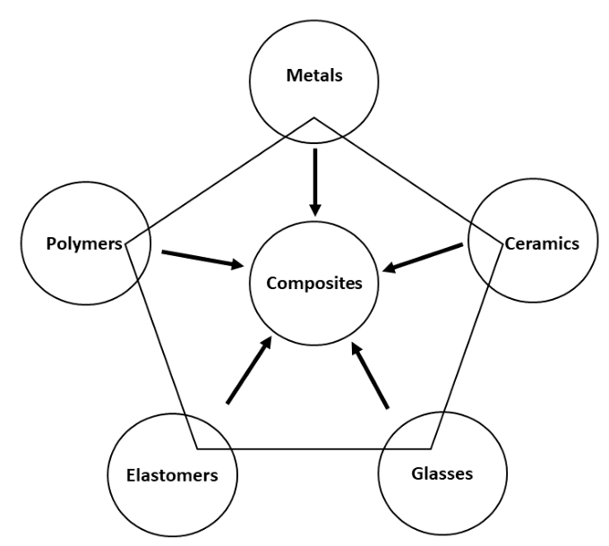
Nature uses the same idea [Session 21 Slide 3]:
- Abalone shell: calcium carbonate (CaCO₃) with about 3 % of organic material, more than 3000 times stronger than calcite. The SEM micrograph shows the layered (brick-and-mortar) structure: thin mineral plates bonded by organic layers, which deflect cracks instead of letting them run straight through.
- Wood: cellulose filaments in a matrix of lignin and hemicellulose. The growth rings form a layered composite, and the rays, ribbon-like structures oriented radially (perpendicular to the rings), give radial stiffening and reinforcement.
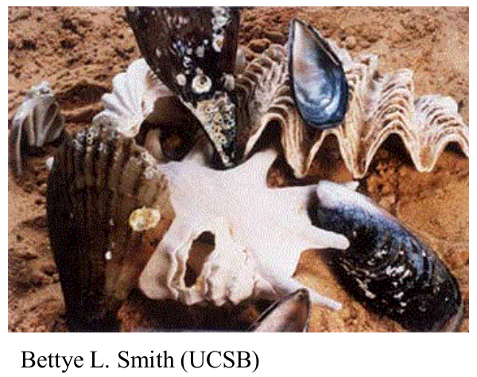
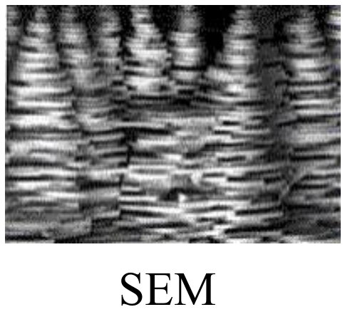
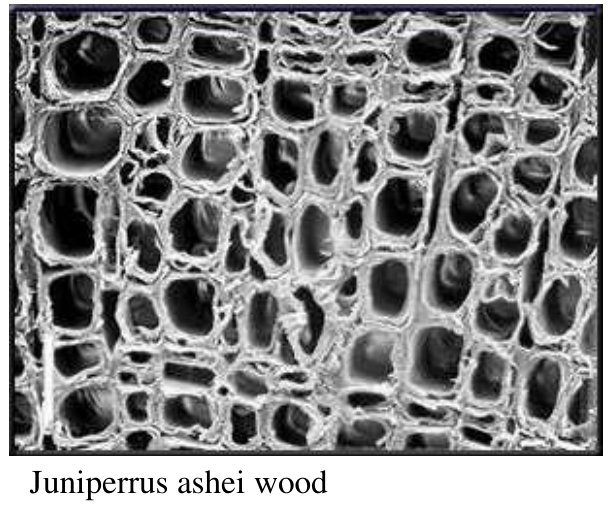
§ 2 Constituents: matrix, reinforcement and interface [Session 21 Slides 4-5]
Both the fibre and the matrix can be a polymer, a metal or a ceramic. The properties of a composite are a function of the properties of the constituent phases, their relative amounts and the geometry of the dispersed phase [Session 21 Slide 4]. The definitions of the slide are the vocabulary of the whole topic:
| Term | Definition [Session 21 Slide 4] |
|---|---|
| Composite | A multi-phase material that exhibits a significant proportion of the properties of the constituent phases, such that a better combination of desirable properties is realised |
| Matrix | The continuous phase that surrounds the other constituents and binds them into a composite material |
| Dispersed phase or reinforcement | The discontinuous, or discrete, phase that adds reinforcement to the composite |
| Particle | A relatively short, globular or spherical dispersed phase |
| Fibre | A reinforcement, typically cylindrical, with a diameter smaller than its length |
| Interface | The planar region that separates two components in any material |
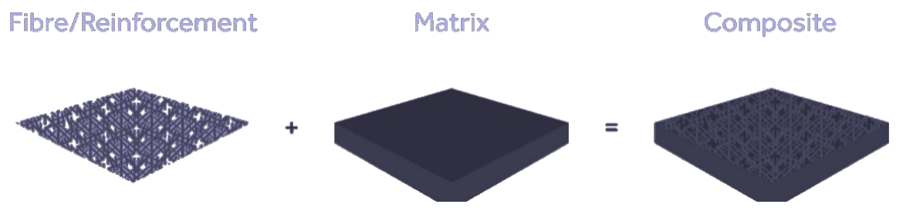
To design a composite, the properties to consider depend on the matrix [Session 21 Slide 5]. For metallic components (where creep matters) and ceramic components (where fracture toughness matters) they are the physical properties (thermal, electrical, optical) and the mechanical properties ($E$, $R_m$, fracture toughness). For polymer components they are the physical and mechanical properties plus the absorption and transmission of water. The table of the slide gives the typical combinations:
| Matrix | Reinforcement material | Properties gained |
|---|---|---|
| Metal | Metal fibres, ceramic, carbon, glass | Mechanical strength at high temperature; electric conduction; higher thermal stability |
| Ceramic | Particles and metallic or ceramic fibres | Chemical and thermal resistance at high temperature |
| Glass | Glass and ceramic particles | Mechanical strength and chemical resistance at high temperature; higher thermal stability |
| Organic | Carbon, glass and organic fibres | Chemical, electrical and erosion resistance, flexibility |
§ 3 Classification of composite materials [Session 21 Slides 6-8]
Composites are classified in two complementary ways.
By the matrix [Session 21 Slide 6]:
| Family | Main architecture | Reinforcement | Matrix |
|---|---|---|---|
| Polymer matrix composites (PMCs) | fibre composite | carbon, glass fibres | epoxy, polyester, phenolic |
| Metal matrix composites (MMCs) | particulate composite | SiC particles | aluminium, titanium, magnesium |
| Ceramic matrix composites (CMCs) | fibre composite | SiC, carbon, SiO₂, Al₂O₃ fibres | SiC, carbon, ZrB₂, HfB₂, Al₂O₃ |

By the reinforcement [Session 21 Slide 7]:
- Particle-reinforced: large-particle, dispersion-strengthened and nanoparticle composites.
- Fibre-reinforced: continuous (aligned) fibres; discontinuous (short) fibres, aligned or randomly oriented; woven fabric.
- Structural: laminates and sandwich panels.
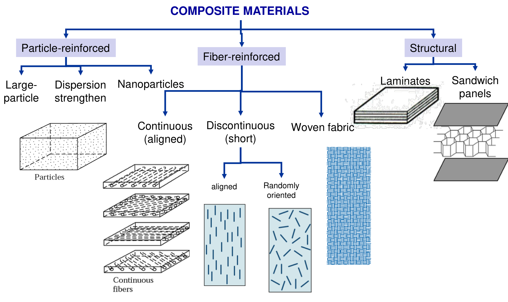
Within each class, the physical and mechanical properties depend on five geometrical factors of the dispersed phase: its concentration, size, shape, distribution and orientation [Session 21 Slide 8]. Concentration and size set how much of the load the reinforcement can take and how it interacts with the matrix; shape, distribution and orientation decide whether the properties are the same in all directions (isotropic) or depend on the direction (anisotropic).
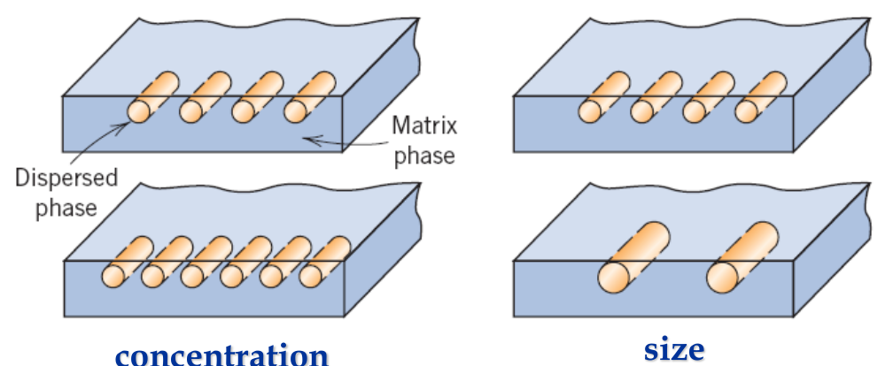
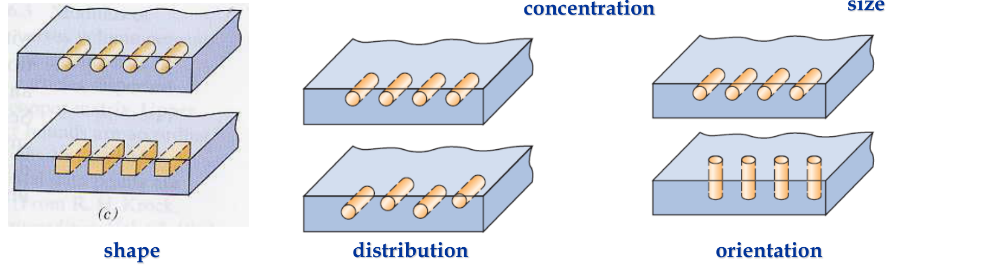
§ 4 Particle-reinforced composites: large particles [Session 21 Slides 9-11]
The mechanical properties of particle-reinforced composites depend on the reinforcement, on the manufacturing route and on the treatments that follow. The most used metallic matrices are Al, Mg, Ti and Ni; polymer matrices are reinforced to improve their mechanical strength, abrasion resistance and electrical conductivity (nanoparticles). The advantages of particle reinforcement are low cost, high stiffness and strength (with inorganic particles), wear resistance and ease of processing [Session 21 Slide 9].
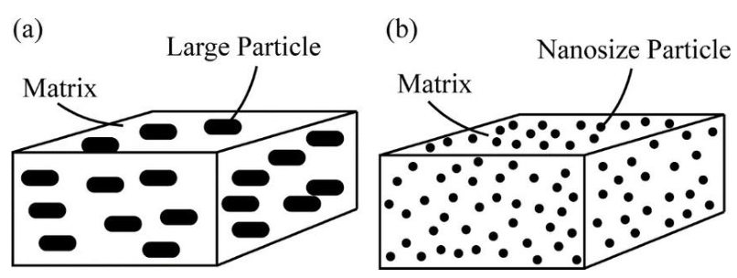
Large particles have a size of 1 to 50 μm and are added at 15 to 40 % by volume [Session 21 Slide 10]. Their interaction with the matrix is treated at the macro-meso scale (as a mixture of two continua, not at the scale of the dislocations). The reinforcement is usually harder and stiffer than the matrix; the matrix transfers the applied stress to the particles, which bear or help to bear the load, so the degree of strengthening depends on the bond strength of the matrix-particle interface. The purpose depends on the matrix:
- in metals and ceramics, particles are added to improve toughness and mechanical resistance;
- in plastics, particles are added as a filler to improve properties (carbon black, soot, elastomers) or to reduce the cost (CaCO₃, clays, hollow glass spheres).
Two examples [Session 21 Slide 11]:
- Carbon black in styrene-butadiene rubber for car tyres. Vulcanised rubber is made by mixing natural rubber with sulphur and other curatives; reinforced with carbon-black particles it becomes the reinforced rubber of auto tyres, stiffer and far more resistant to abrasion.
- Cemented carbides (cermets): ceramic particles (strong, brittle), such as tungsten carbide or titanium carbide, in a metal matrix of Co or Ni (soft, ductile) that gives toughness. They are used for cutting tools for hardened steels; the WC-Co micrograph of the slide shows angular WC grains surrounded by cobalt.
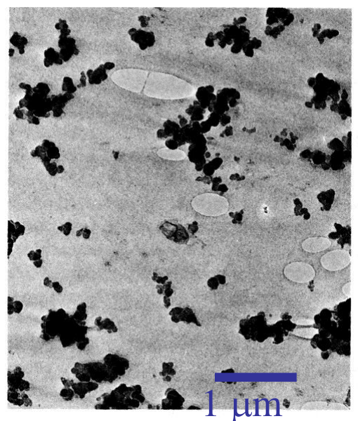
§ 5 Dispersion-strengthened composites: fine particles [Session 21 Slides 12-13]
In dispersion-strengthened composites the dispersed phase is made of uniformly dispersed fine, hard and inert particles with a size below 0.1 μm [Session 21 Slide 12]. The mechanism is different from the large-particle case: the particles are small enough to impede dislocation movement, so the hardness, the modulus and the strength increase (↑ hardness, ↑ $E$, ↑ $R$), and the continuous phase, the matrix, still carries the load. The volume fraction of the slide is 15 to 40 %; the composite is stronger than the pure metal. The dispersoids can be metallic, non-metallic or intermetallic, usually carbides, oxides or borides, and their shape can be round, disc or needle (the needle gives the maximum strength). Because inert oxide particles do not dissolve or coarsen when the metal is heated, the strengthening survives at temperatures where precipitation hardening would be lost (extension: the link to precipitation hardening is not on the slide).
Examples [Session 21 Slide 13]:
- SAP (sintered aluminium powder): fine Al₂O₃ particles dispersed in a pure aluminium matrix.
- TD-nickel (thoria-dispersed nickel): powders of metallic Th and Ni are ball-milled, compacted and sintered in air, and the Th reacts to form ThO₂. The micrograph shows ThO₂ particles of 300 nm diameter (×2000).
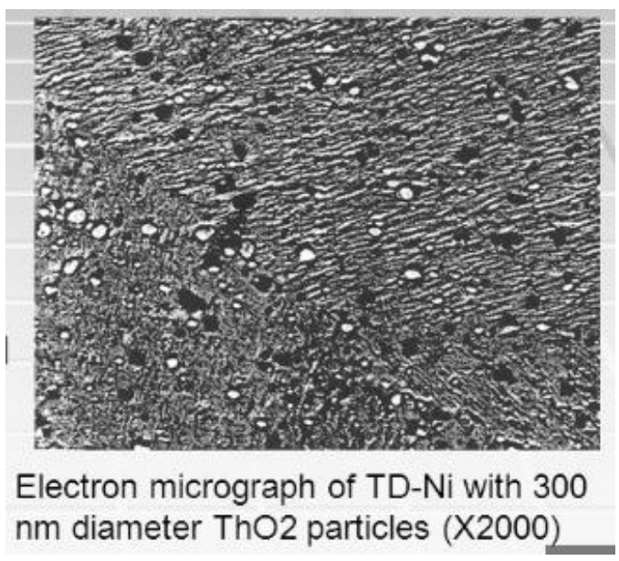
§ 6 Fibre-reinforced composites: fibre shapes, types and functions [Session 21 Slides 14-16]
Fibres are classified according to their shape [Session 21 Slide 14]: continuous fibres (aligned), discontinuous or short fibres (aligned or randomly oriented) and woven fibres. Continuous aligned fibres give the highest properties along the longitudinal direction and the lowest across it (transversal direction); randomly oriented short fibres give lower but nearly isotropic properties in the plane.
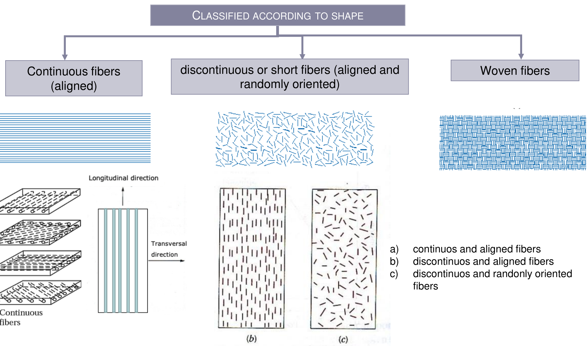
The fibre types are glass (glass-fibre-reinforced plastics, GFRP), carbon (CFRP), aramid (AFRP) and other fibres (boron, SiC, Al₂O₃) used to reinforce polymers. The matrices are polymeric, either thermosetting (usually epoxy, for continuous fibres) or thermoplastic, and metal and ceramic matrices are less used [Session 21 Slide 15]. Two primary factors limit the use of fibre composites [Session 21 Slide 15]:
- the absence of plasticity, critical in mechanical joints (a bolted hole cannot redistribute the stress by yielding as a metal does);
- the low damage tolerance: small accidental impacts can produce delaminations that cause a loss of mechanical strength.
The fibre and the matrix have different jobs [Session 21 Slide 16]. The fibre carries most of the load applied to the composite. The matrix:
- transfers the load into and out of the fibres;
- protects the fibres from the environment (chemical degradation);
- separates the fibres, so that if one fails its neighbours do not fail with it (it stops crack propagation);
- keeps the fibres in their orientation;
- gives the shape of the component.
A high-performance composite combines strong, stiff and brittle fibres with a soft and ductile matrix, which gives high fatigue strength and high stiffness in relation to the weight. The final aim is high strength and stiffness with low density, that is high specific strength and high specific modulus, and it needs a good interface bond between fibre and matrix [Session 21 Slide 16].
§ 7 Glass fibres [Session 21 Slides 17-20]
Glass fibres are based on SiO₂ (50 to 70 %) with oxides of Ca, Al, B, Na, Mg and K [Session 21 Slide 17]. They are non-combustible, have good chemical, biological and thermal resistance (high $T_m$, low $\alpha$), are electrical and thermal insulators (low $k$), have a low coefficient of thermal expansion, are cheap, and are amorphous and isotropic. Compared with carbon and aramid fibres, glass fibres have a higher tensile strength, a lower modulus (but a larger elongation) and a higher density. Their low cost, versatility and easy processing make them the most used fibres to reinforce polymers.
The properties of the four main glasses [Session 21 Slide 18]:
| Type of glass | Relative density | $\sigma_{tensile}$ (MPa) | $E$ (GPa) | $\alpha$ ($10^{-6}$ K⁻¹) | Dielectric constant (20 °C, 1 MHz) | $T_m$ (°C) | For applications that require |
|---|---|---|---|---|---|---|---|
| E | 2.58 | 3450 | 72.5 | 5.0 | 6.3 | 1065 | Good electrical properties and dimensional stability (circuit boards) |
| A | 2.50 | 3040 | 69.0 | 8.6 | 6.9 | 996 | Chemical resistance |
| ECR | 2.62 | 3625 | 72.5 | 5.0 | 6.5 | 1204 | Good electrical properties and chemical resistance |
| S | 2.48 | 4590 | 86.0 | 5.6 | 5.1 | 1454 | Tensile strength and thermal stability (aerospace and aeronautic industries) |
E glass is a Ca aluminoborosilicate, the cheapest and the most resistant to moisture; A glass is rich in alkali; S glass is a Mg aluminosilicate without B, the strongest and the one used in aerospace. The common polymer matrices are thermoplastics (nylon 66, polycarbonate, polystyrene) and thermosets (epoxy, polyesters, phenolic, silicone) [Session 21 Slide 18].
The box of Slide 18 labels both lines "Thermoplastics". The second line (epoxy, polyesters, phenolic, silicon) lists thermosetting resins, as Section 19 explains.
The strength of glass fibres is determined by the damage during processing and by the adsorption of water on their surface: a scratched or wet glass surface carries flaws that start fracture [Session 21 Slide 19]. For this reason the fibres receive a sizing, a protective coating applied right after drawing. The sizing contains a film-forming polymer (such as polyvinyl acetate) and a coupling agent (organosilane, titanate or chromate). Its roles are to bind the filaments together for ease of processing, to lubricate the fibres so that they withstand abrasion, to give anti-static properties, and to provide chemical functionalities on the surface that improve the interfacial bond strength. The drawing of the slide shows the molten glass leaving the bushing, the cooling air and water sprays and the sizing applicator (contact time below 0.5 s, fibres leaving at 20 m/s).
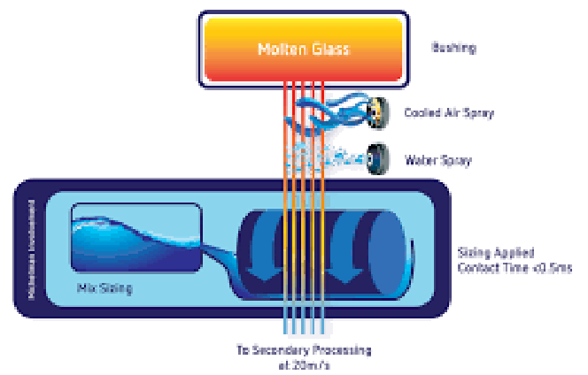
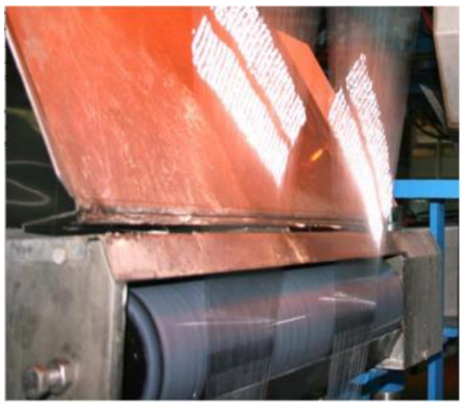
Slide 19 of Session 21 (and Slide 18 of Session 22) prints "binds the filaments (d = 10-20 mm)". Glass filaments are micrometres thick: the bundle table of Session 21 Slide 28 gives 4 to 13 μm for fibreglass, and Slide 25 gives 5 to 20 μm for carbon filaments. The unit should read μm.
Fibreglass is used in three typical configurations [Session 21 Slide 20]: continuous fibres, discontinuous (chopped) fibres, and woven fibres (dry or as prepreg); the photographs show glass fibres, chopped strands, glass fabric and bobbins.
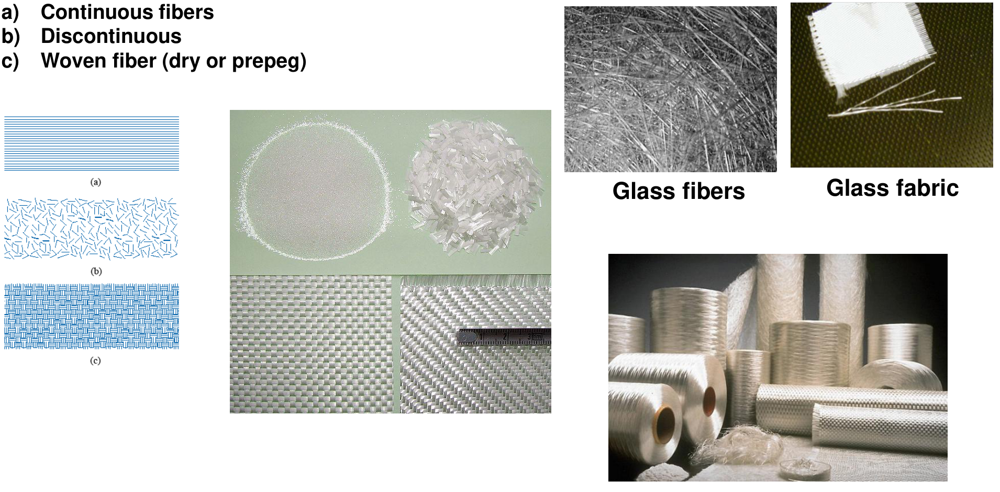
§ 8 Carbon fibres: uses and classification [Session 21 Slides 21-22]
Carbon fibres are the fibres of the advanced composites of aerospace and aeronautics [Session 21 Slide 21]. They have very good thermal and physical properties; high strength, high stiffness and low weight; a low coefficient of thermal expansion and high thermal and electrical conductivity. Because the CTE of the fibre is low (slightly negative along the axis, extension) and that of the matrix is positive, the two can be combined to give a composite with a CTE close to zero, which minimises thermal fatigue (the slide says it "minimizes the thermal fatigue strength"; what is minimised is the thermal stress that causes fatigue). In composites with plastic resins (epoxy) they give a good combination of high strength, stiffness and low weight. As the cost fell, from about 220 USD/kg in the 1970s to about 9 USD/kg in the 1980s as printed, they spread to sports equipment and industrial and commercial products. The chart of the slide shows the demand growing from under 20 000 to about 40 000 tons per year between 2001 and 2010 (read from the chart), with industrial, aircraft and sporting uses.
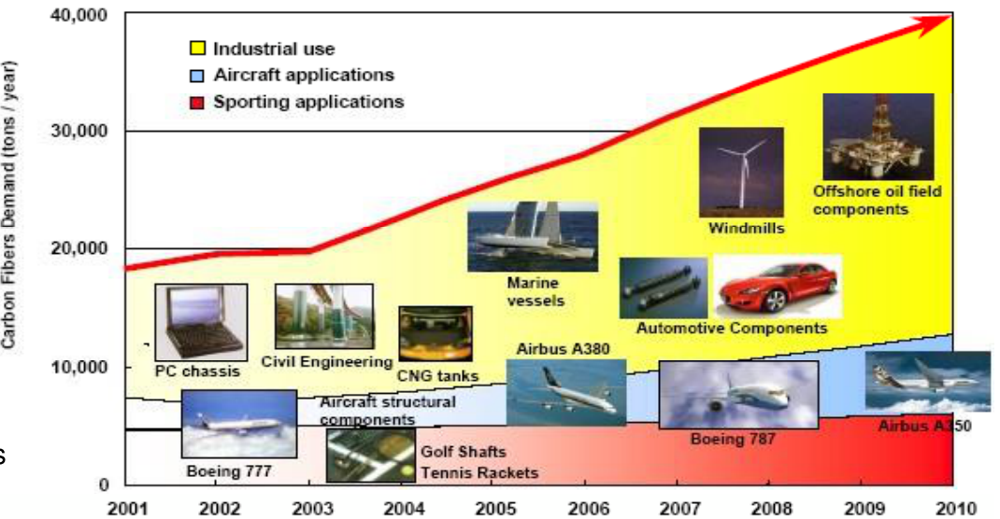
The IUPAC classification sorts carbon fibres by their mechanical properties [Session 21 Slide 22]:
| Type | Tensile modulus | Tensile strength |
|---|---|---|
| Ultra high elastic modulus (UHM) | 600 GPa or higher | 2500 MPa or higher |
| High elastic modulus (HM) | 350 to 600 GPa | 2500 MPa or higher |
| Intermediate elastic modulus (IM) | 280 to 350 GPa | 3500 MPa or higher |
| Standard elastic modulus (HT) | 200 to 280 GPa | approximately 2500 MPa or higher |
| Low elastic modulus (LM) | 200 GPa or lower | 3500 MPa or lower |
The chart plots the same boxes with the strength in GPa (2500 MPa = 2.5 GPa): the two units of the slide agree. The trend is the trade-off of the next section: the highest moduli (HM, UHM) come with moderate strength, and the highest strengths with intermediate moduli.
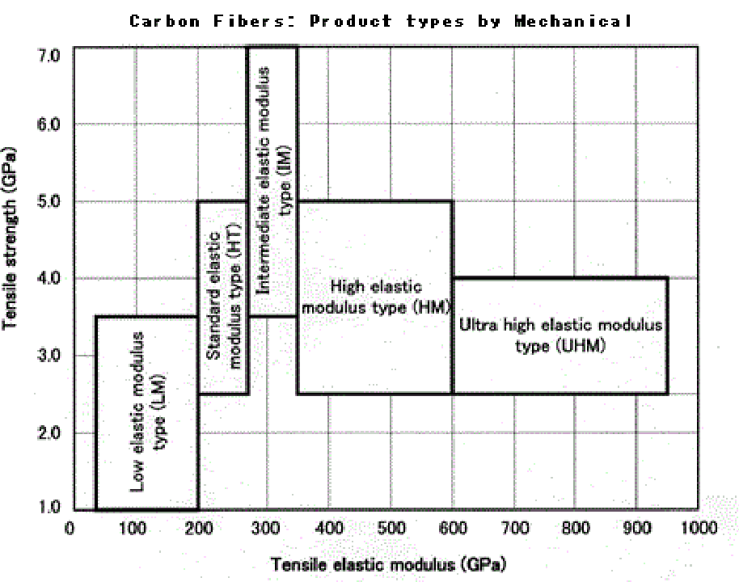
§ 9 Carbon fibres: manufacture and heat treatment [Session 21 Slides 23-24]
Carbon fibres are made from organic precursors: polyacrylonitrile (PAN-based fibres) or pitch (pitch-based fibres, from oil or coal) [Session 21 Slide 23]. The process has four steps:
- Production of the acrylic (PAN) or pitch fibre by spinning.
- Stabilisation or oxidation: the fibre is stretched and passed through an oxidising furnace in air at 200 to 300 °C, which forms a fibrillar network that will not melt in the next steps.
- Carbonisation: heat treatment at 1000 to 1500 °C in an inert atmosphere and under longitudinal tension; O, H and N are removed and a carbon fibre remains.
- Graphitisation: heat treatment above 1800 °C in an inert atmosphere; the degree of orientation increases, and with it the modulus and the strength.
The result is a fibre whose hexagonal (graphite-like) planes are oriented along the fibre axis. Since the covalent bonds inside a plane are extremely stiff and strong, the more aligned the planes, the stiffer the fibre.
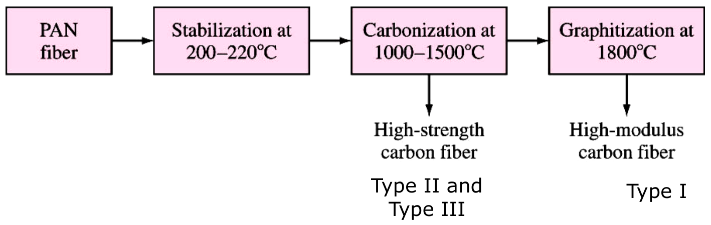
The flow diagram of Slide 23 prints "Stabilization at 200–220 °C", while step 2 of the text prints "Stretching (200-300 °C)". Both are copied as printed; the slide does not say which range applies to which precursor.
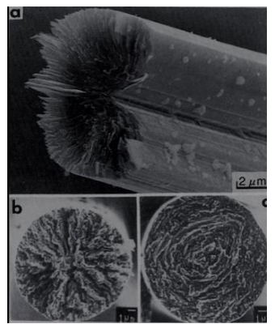
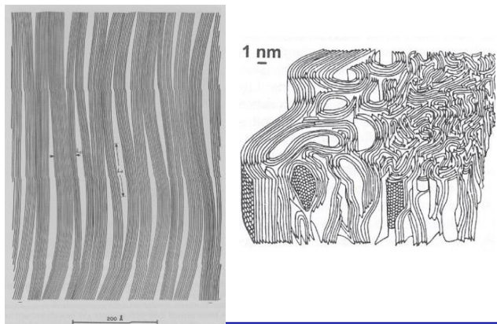
The final heat-treatment temperature defines three types [Session 21 Slide 24]:
| Type | Heat treatment | Structure and properties | Fibre |
|---|---|---|---|
| Type I (HTT) | high temperature, above 2000 °C | high degree of orientation, high modulus | high-modulus fibre |
| Type II (ITT) | intermediate temperature, about 1500 °C | less orientation but high strength | high-strength fibre |
| Type III (LTT) | low temperature, below 1000 °C | random orientation, low strength and modulus |
Carbon nanotubes are named as promising reinforcements; the TEM micrograph of the slide shows a multi-walled tube (scale bar 20 nm).
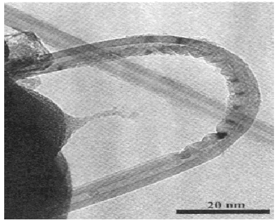
§ 10 Carbon fibre products [Session 21 Slides 25-29]
Individual carbon filaments have a diameter of 5 to 20 μm. They are grouped into bundles or tows named by their number of filaments: 1K (1000), 3K, 6K, 12K and 24K; the larger the tow, the lower the cost. Tows are wound on coils and processed into unidirectional tape or fabric [Session 21 Slide 25]. The SEM images show bundles at ×1500, ×3000 and ×20 000.
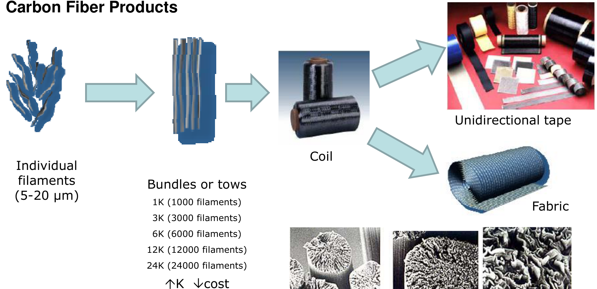
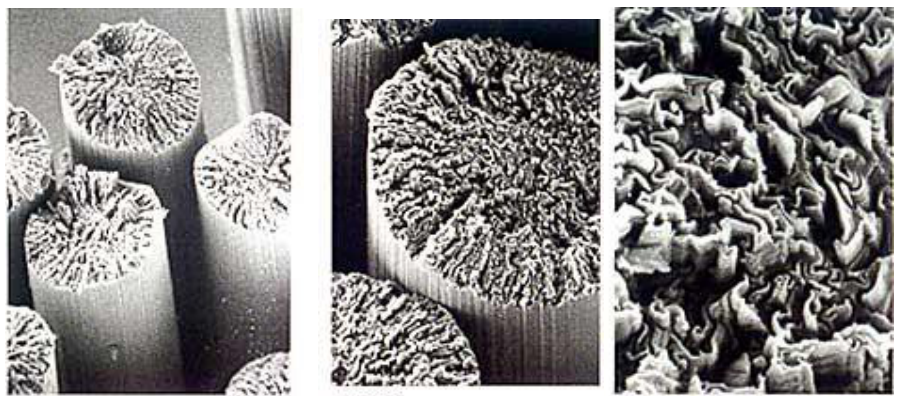
The product forms and their uses [Session 21 Slides 26-27]:
| Type | Specification | Major usage |
|---|---|---|
| Filament | A yarn of many fibres: twisted, untwisted, twisted-and-untwisted | Reinforcement for CFRP, CFRTP or C/C composites: aircraft and aerospace equipment, sporting goods, industrial parts |
| Tow | An untwisted bundle of a very large number of fibres | As filament |
| Staple yarn | A yarn spun from staples | Heat insulator, anti-friction material, C/C composite parts |
| Woven fabric | A woven sheet of filament or staple yarn | As filament |
| Braid | A braided yarn of filament or tow | Reinforcement particularly suited to tubular products |
| Chopped fibre | Chopped sized or non-sized fibre | Compounded into plastics, resins or Portland cement to improve mechanical performance, abrasion, electrical conductivity and heat resistance |
| Milled | Powder made by milling fibre (ball mill) | Compounded into plastics, resins or rubber for the same purposes |
| Felt, mat | Staple layered by carding, then needle-punched or bonded with organic binders | Heat insulator, base for moulded insulators, heat-resistant protective layer, corrosion-resistant filters |
| Paper | Made from staple by dry or wet paper-making | Anti-static sheets, electrodes, speaker cones, heating plates |
| Prepreg | Half-hardened sheets of carbon fibre impregnated with thermosetting resin, stable long enough for automatic sheet layering | Aircraft and aerospace equipment, sporting goods and industrial parts that need low weight and high performance |
| Compounds | Thermoplastic or thermosetting resin mixed with additives and chopped fibre, for injection moulding | Housings of office equipment (electrical conductivity, rigidity, low weight) |
The aircraft and aerospace uses (filament, tow, woven fabric and prepreg) are highlighted in red on Slide 27.
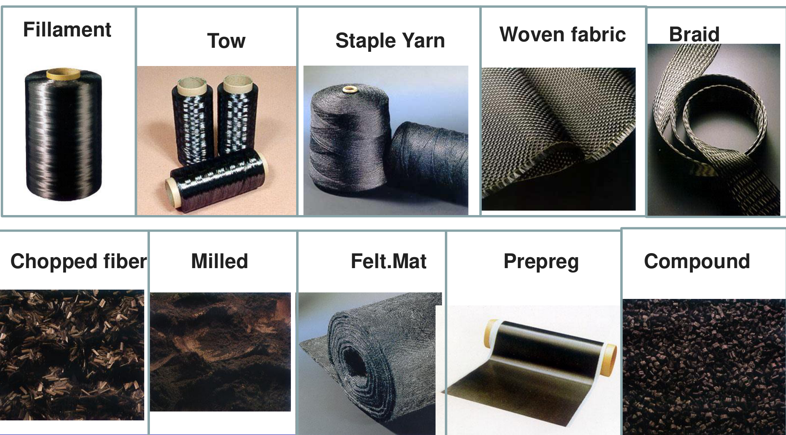
Slide 28 gives the mean modulus of commercial tows: conventional tows of standard modulus (3K to 24K) have 230 GPa, intermediate-modulus tows (6K to 24K) 300 GPa and high-modulus tows (6K to 24K) 350 GPa, while large tows (45K, 48K, 80K) are of standard modulus, 230 GPa. Its second table compares fibre bundles:
| Material | Yield per tow (m/kg) | Filament size (μm) |
|---|---|---|
| Graphite (1000 to 12 000 filaments per tow) | 300 to 1200 | 5 to 10 |
| Fibreglass (2450 to 12 240 filaments per tow) | 490 to 2400 | 4 to 13 |
| Aramid (800 to 3200 filaments per tow) | 2000 to 7850 | 12 |
Each product form goes with a fabrication method and an application [Session 21 Slide 29]: filament → filament winding → pressure vessels; woven fabric → manual lay-up, RTM, pultrusion → car bodies, ships, aircraft; prepreg → autoclave and automatic processes → aircraft and sports equipment; chopped fibre → compound moulding → computers. Part III describes each of these processes.
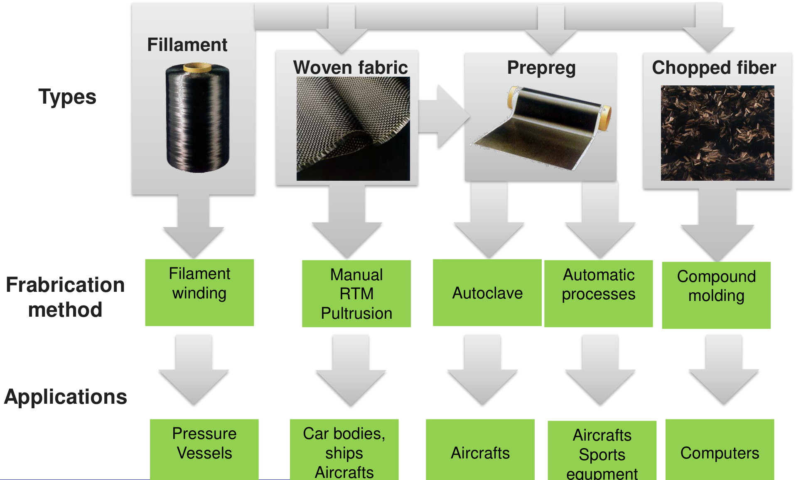
§ 11 Aramid fibres [Session 21 Slide 30]
Aramid fibres are aromatic polyamides, sold as Kevlar (poly(para-phenylene terephthalamide)) or Nomex (poly(meta-phenylene isophthalamide)). The aromatic rings give thermal stability. The modulus is very high because the rigid molecules are arranged in ordered domains, and during extrusion they orient along the direction of flow, so the fibre is almost a bundle of straight, aligned chains. Aramids are thermal and electrical insulators with a low $\alpha$ and a high impact strength, and a lower modulus than carbon [Session 21 Slide 30].
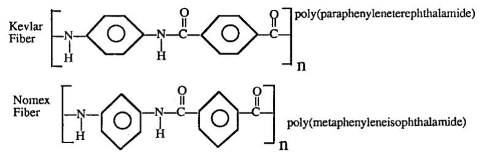
Kevlar was introduced commercially by Du Pont in 1972. Kevlar 49 is the most used in structural composites (high modulus); Kevlar 29 is for high-toughness applications (bulletproof vests); Kevlar 149 has a modulus close to the theoretical value:
| Material | $\rho$ (g/cm³) | Diameter (μm) | $\sigma_{tensile}$ (GPa) | $E$ (GPa) | $\varepsilon$ (%) |
|---|---|---|---|---|---|
| Kevlar 29 | 1.44 | 12 | 3.6 | 83 | 4.0 |
| Kevlar 49 | 1.44 | 12 | 3.6 to 4.1 | 131 | 2.8 |
| Kevlar 149 | 1.47 | 12 | 3.4 | 186 | 2.0 |
The three grades show the usual trade-off: the stiffer the fibre, the smaller its elongation at failure. The slide also shows a 100 % aramid prepreg and an aramid woven fabric.
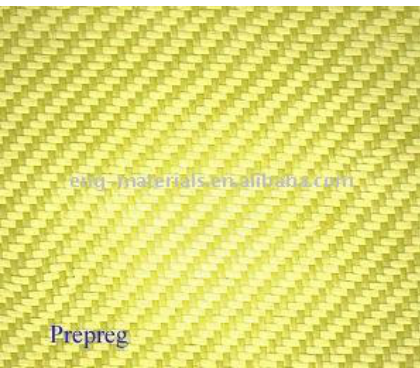
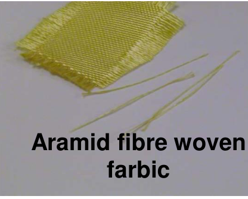
§ 12 Woven fabrics, non-crimp fabrics and preforms [Session 21 Slides 31-33]
Carbon, glass, aramid and other multifilament fibres are produced as fabrics, to be processed into high-performance PMCs by prepreg, resin-film or liquid-resin-injection techniques [Session 21 Slide 31]. In a fabric the warp yarns run along the roll and the weft yarns across it; the weave pattern (plain, 2×2 twill, 4-harness satin, 8-harness satin) sets how often the yarns cross, and with it the drape and the waviness (crimp) of the fibres. Two balances are defined:
- UND (unidirectional) cloth has 95 % of the fibres parallel to the selvage (the edge of the roll): exceptional strength in that direction and very little at right angles.
- BID (bidirectional) cloth has half the fibres parallel and half at right angles to the selvage: the same strength in both directions.

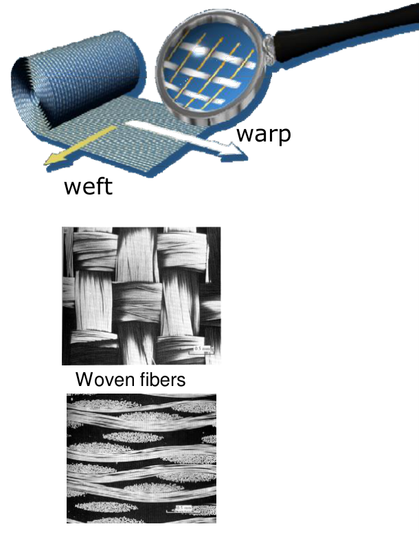
Non-crimp fabrics (NCFs) are stitch-bonded materials with zero elongation made of unbent fibre layers (for example plies at 0°, +45°, 90° and −45° stitched together) [Session 21 Slide 32]. Because the fibres stay straight, they carry load without the waviness of a woven fabric. The cost chart of the slide shows how the fibre sets the price of a fabric of about 300 g/m²: from below 1 £/m² for E-glass roving to about 45 £/m² for IM carbon (values read from the bar chart).
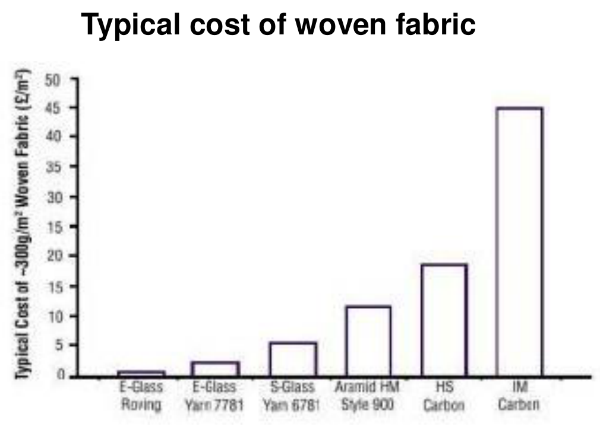
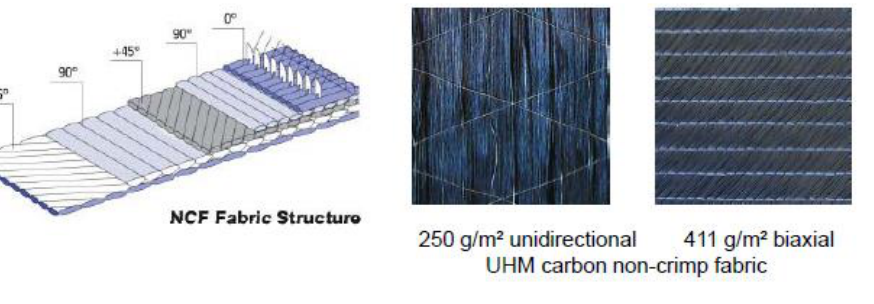
Preforms are sets of dry fibre that have very nearly the final shape of the part [Session 21 Slide 33]. They are made by manual or automated methods, with textile technologies such as 3D braiding (the yarn carriers move around a base array and the braid forms along the axis of the part). Preforms are the input of the liquid-moulding processes of Part III (RTM, RFI).
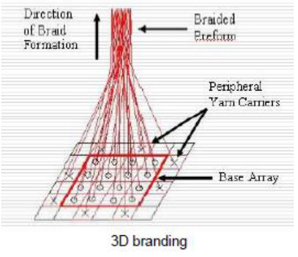
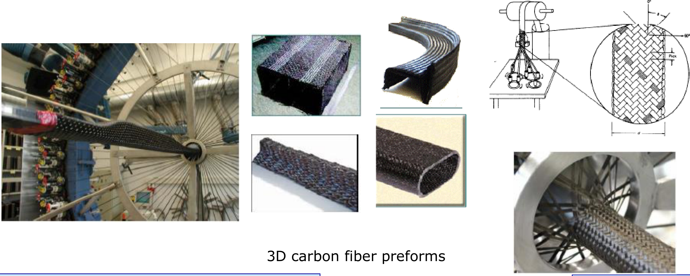
§ 13 Ceramic fibres [Session 21 Slide 34]
Ceramic fibres are mainly boron, Al₂O₃, Si₃N₄ and SiC, with typical matrices of Al or Ti [Session 21 Slide 34]. They resist high temperatures (above 1300 °C) and thermal shock. The slide lists their applications as thermal insulators, not structural, and their limitation as cost: about five times the price of carbon fibre. The micrograph shows carbon-coated SiC fibres (about 100 μm in diameter, read against the 250 μm scale bar) in a Ti₃Al (titanium aluminide) matrix, an MMC.
§ 14 Structural composites: laminates [Session 21 Slides 35-37]
Slide 35 repeats the classification of Slide 7 with the structural branch framed: laminates and sandwich panels. Structural composites are formed by composite materials and homogeneous materials, and their properties depend on the geometry of the structural elements as well as on the materials [Session 21 Slide 36].
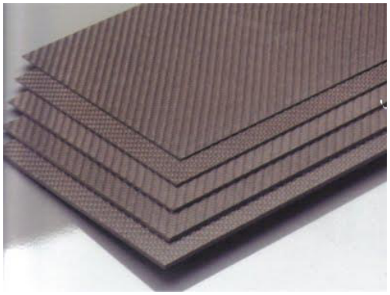
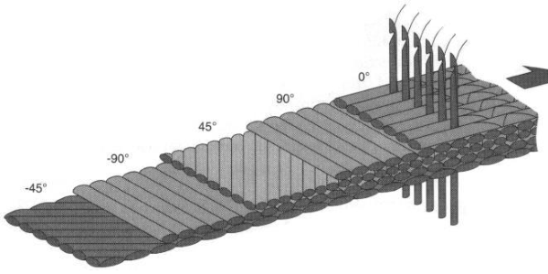
A laminate is a stack of sheets (plies, laminae) of unidirectional composite, oriented differently with respect to each other to obtain the required mechanical characteristics [Session 21 Slide 37]. Examples are plastics reinforced with continuous aligned fibres in epoxy, polyester, PE, PA or PET. The usual fibre orientations are 0°, 90° and ±45°; combining them gives strength and stiffness in any direction, and in-plane isotropy can be achieved (the quasi-isotropic stack 0/90/+45/−45/−45/+45/90/0 of the figure). The layers are arranged so that strength is maximised and weight minimised. The rules printed on the slide are:
- laminates should always be symmetric with respect to their mid-plane, and balanced, to avoid anomalous distortions of the structure (an unsymmetric stack warps on cooling from the cure temperature and couples stretching with bending);
- the strength and stiffness change dramatically with the orientation;
- a stack of fabrics without a binding matrix has no structural use;
- unidirectional composites are never used alone in structures, because across the fibres they are as weak as the matrix (Section 24 quantifies this).
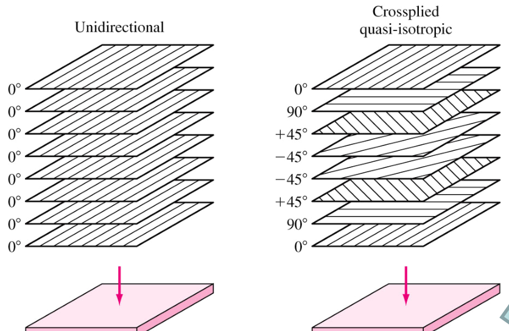
§ 15 Sandwich panels and GLARE [Session 21 Slides 36, 38-39]
A sandwich has two strong external layers (face sheets) bonded to a thicker layer of less dense material (the core), of low stiffness and low strength [Session 21 Slide 38]. The two parts work as the flanges and the web of a beam:
- the face sheets carry most of the in-plane loads and the bending stresses; they are made of Al alloys, fibre-reinforced plastics, Ti, steel or plywood;
- the core separates the face sheets and resists deformation perpendicular to the face plane, and gives resistance to the shear stresses on planes perpendicular to the faces.
Separating the faces multiplies the bending stiffness of the panel with very little added weight, because the bending stiffness grows with the square of the distance between the faces (extension: the slide gives the functions, not this scaling). Core materials can be polymer foams, synthetic rubber, inorganic cement or balsa wood; the typical core is a honeycomb of thin layers arranged in hexagonal cells, bonded to the faces with a film adhesive. Applications are ceilings, floors and walls of buildings and, in aerospace, wing coverings and fuselage panels [Session 21 Slides 36, 38].
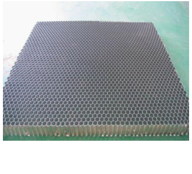
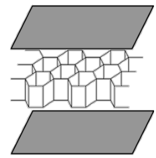
GLARE ("glass-reinforced" fibre metal laminate, FML) is an example of a hybrid laminate [Session 21 Slide 39]. It is made of several very thin sheets of metal (usually aluminium) alternating with layers of glass-fibre prepreg, all bonded with an epoxy matrix. The unidirectional prepreg sheets can be aligned in different directions to suit the expected stresses. (Extension: the metal layers give impact and damage resistance, and the glass layers slow the growth of fatigue cracks in the metal.) The slide shows the lay-up, a micrograph of the alternating GFRP and aluminium layers (500 μm bar), the GLARE panels in the structure of an aircraft (GLARE is 3 % of the A380 structure, Section 40) and production at Airbus Nordenham.
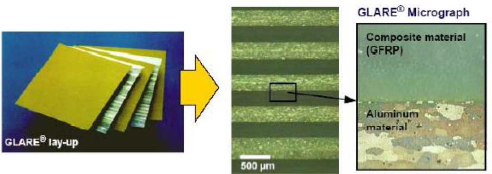
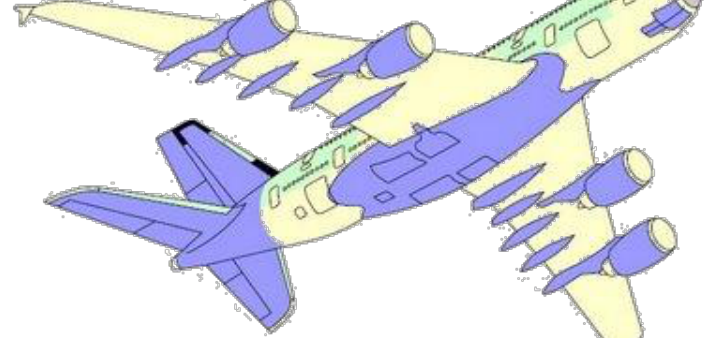
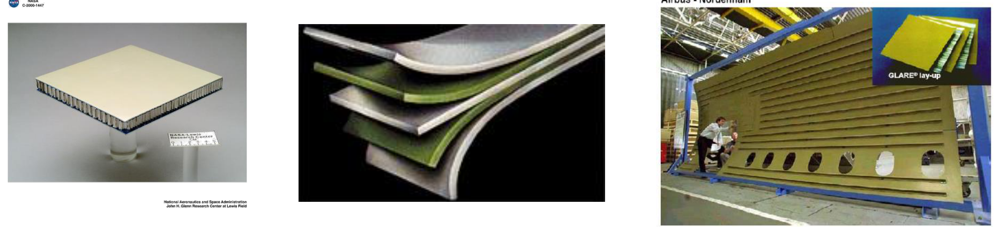
§ 16 Mechanical properties of the reinforcements [Session 21 Slides 40-43]
The stress-strain curves of the fibres (Slide 40) are straight lines up to fracture: the fibres are linear elastic and brittle. Their slopes are the moduli: HM graphite yarn 414 GPa, boron fibre 379 GPa, HT graphite yarn 262 GPa, Kevlar 49 roving 131 GPa, S-glass roving 82.7 GPa and E-glass roving 68.9 GPa, with Nomex far below. The stiffest fibres break at the smallest strains (under 1 %), while glass reaches 3 to 4 %.
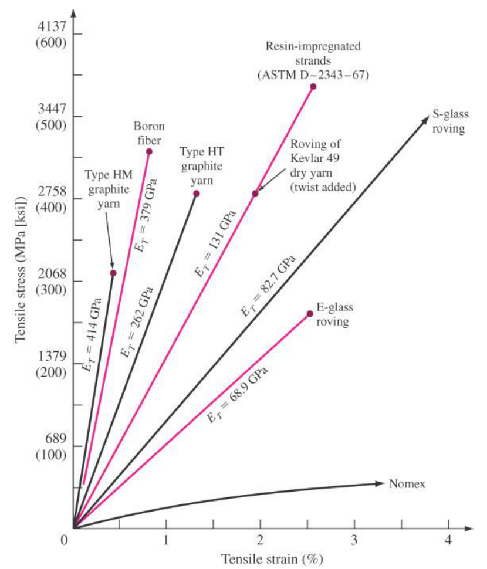
Slide 41 gives the properties of common epoxy PMCs (UD = unidirectional, CSM = chopped strand mat; the property names "Mod Cizalla" and "Densidad" are printed in Spanish):
| Property | UD E-glass/epoxy | UD carbon/epoxy | UD Kevlar 49/epoxy | 0/90 woven E-glass/epoxy | ±45 woven E-glass/epoxy | 0/90 woven carbon/epoxy | ±45 woven carbon/epoxy | 0/90 woven Kevlar/epoxy | CSM E-glass/polyester |
|---|---|---|---|---|---|---|---|---|---|
| Fibre (vol%) | 53 | 57 | 60 | 33 | 33 | 50 | 50 | 50 | 19 |
| UTS 0° (MPa) | 1190 | 2040 | 1379 | 360 | 185 | 625 | 240 | 517 | 108 |
| UTS 90° (MPa) | 73 | 90 | 30 | 360 | 185 | 625 | 240 | 517 | 108 |
| UCS 0° (MPa) | 1001 | 1000 | 276 | 240 | 122 | 500 | 200 | 172 | 148 |
| UCS 90° (MPa) | 159 | 148 | 138 | 205 | 122 | 500 | 200 | 172 | 148 |
| USS 0° (MPa) | 67 | 49 | 60 | 98 | 137 | 130 | 110 | 85 | |
| $E$ 0° (GPa) | 39 | 134 | 76 | 17 | 10 | 70 | 18 | 31 | 8 |
| $E$ 90° (GPa) | 15 | 11 | 5 | 17 | 10 | 70 | 18 | 31 | 8 |
| Shear modulus $G$ (GPa) | 4 | 5 | 2 | 5 | 8 | 5 | 27 | 2 | 2.75 |
| ILSS (MPa) | 90 | 94 | 83 | 60 | 48 | 57 | 57 | 70 | |
| Poisson's ratio | 0.263 | 0.34 | 0.24 | 0.7 | 0.32 | ||||
| Density (g/cm³) | 1.92 | 1.57 | 1.38 | 1.92 | 1.92 | 1.53 | 1.53 | 1.33 | 1.45 |
(UTS, UCS, USS: ultimate tensile, compressive and shear strength; ILSS: interlaminar shear strength.) The table is the experimental face of the rule of mixtures: a UD laminate is very strong and stiff at 0° and as weak as the matrix at 90° (carbon/epoxy: 134 against 11 GPa, 2040 against 90 MPa), a 0/90 fabric shares its properties equally between the two directions at about half the UD value, and a ±45 fabric is weak in tension at 0° but has the highest shear modulus (27 GPa for carbon), because its fibres lie along the directions of the principal stresses of shear. Kevlar composites are strong in tension but weak in compression (276 against 1379 MPa), a consequence of the fibrillar structure of the aramid fibre (extension).
Table 10.11 of Slide 42 collects the properties of common dispersed phases:
| Group | Dispersed phase | $E$ (GPa) | Tensile strength (MPa) | Elongation at failure (%) |
|---|---|---|---|---|
| Glass fibre | C-glass | 69 | 3100 | 4.5 |
| Glass fibre | E-glass | 72.4 | 3400 | 4.8 |
| Glass fibre | S-glass | 85.5 | 4800 | 5.6 |
| Ceramic fibre | C (graphite) | 340 to 380 | 2200 to 2400 | |
| Ceramic fibre | SiC | 430 | 2400 | |
| Ceramic whisker | Al₂O₃ | 430 | 21 000 | |
| Polymer fibre | Kevlar | 131 | 3800 | 2.8 |
| Metal filament | Boron | 410 | 3400 | |
| Concrete aggregate | Crushed stone and sand | 34 to 69 | 1.4 to 14 (compressive 69 to 340) |
(The table also gives the values in ksi; the sources printed under it are Broutman and Krock, Modern Composite Materials, 1967; Dhingra, Du Pont; and Nicholls, Composite Construction Materials Handbook, 1976.) The Al₂O₃ whisker, a nearly flawless single crystal, reaches 21 GPa, close to the theoretical strength; bulk ceramics are far weaker because of their flaws (Topic 8).
Slide 43 compares the materials by their specific properties, strength/density and modulus/density, in an epoxy matrix. In the left chart (US units: a stress in psi divided by a weight density in lb/in³ gives a length in inches) Kevlar 49 strands have the highest specific strength, HM graphite and boron the highest specific modulus, and steel and aluminium sit near the origin. The right chart, in MJ/kg (= m²/s²), separates unidirectional, quasi-isotropic and bulk forms: going from unidirectional to quasi-isotropic lowers the specific properties by a large factor, but the best fibres stay ahead of the metals.
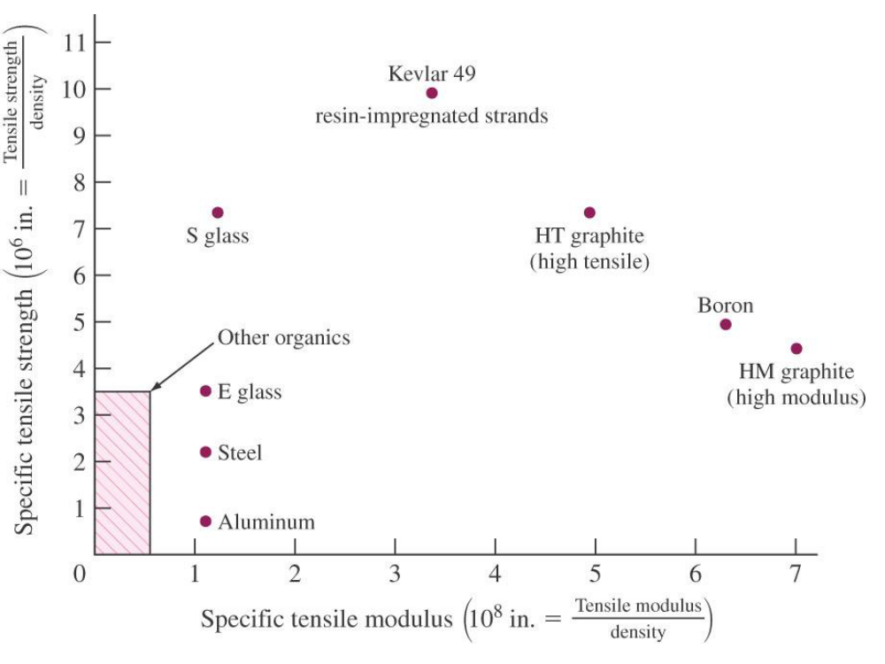
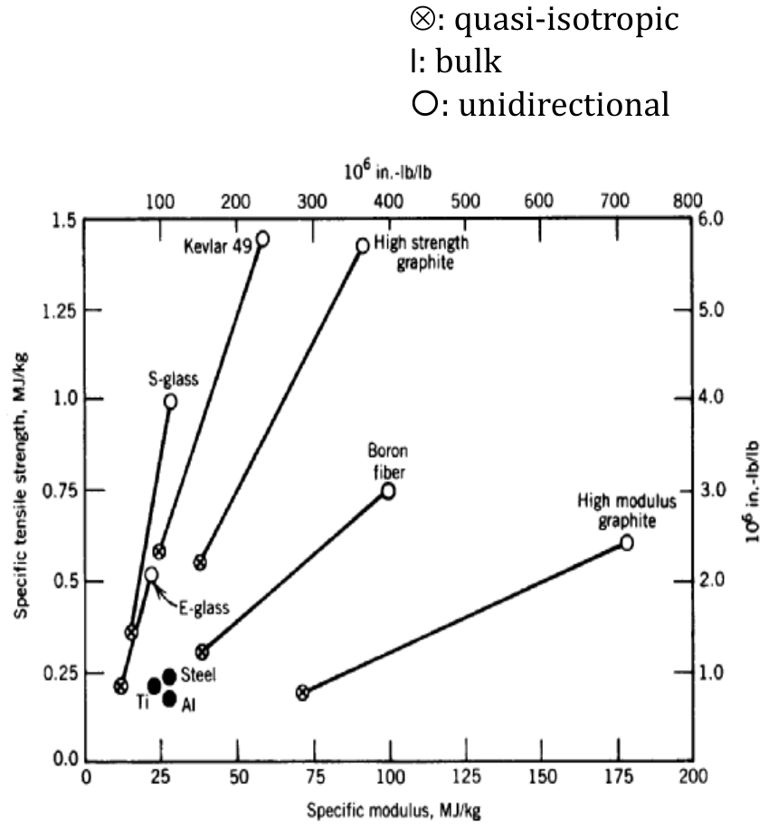
Part II — Composites II: Polymer Matrices and Mean Elastic Properties (Session 22, Slides 1–29)
§ 17 Why polymer matrices: advantages and disadvantages [Session 22 Slides 1-3]
Slide 1 gives the contents of the session: why polymers are used in composites, thermosetting and thermoplastic matrices, the interface region, and the mean elastic properties of composites (the mechanics-of-materials approach for long-fibre composites and for composites with a uniformly dispersed aggregate).
Advanced polymer composites are used because they offer [Session 22 Slide 2]: good specific mechanical performance, good fatigue performance, low weight, custom design (the fibres are placed where the loads are), dimensional stability, high chemical resistance, no corrosion problems, good fire behaviour and a reduction in the number of parts. The strength-density chart of the slide shows why: CFRP and GFRP reach the strengths of metals and alloys at a fraction of their density (the chart shows compressive strength for ceramics, whose tensile strength is typically 10 % of it).
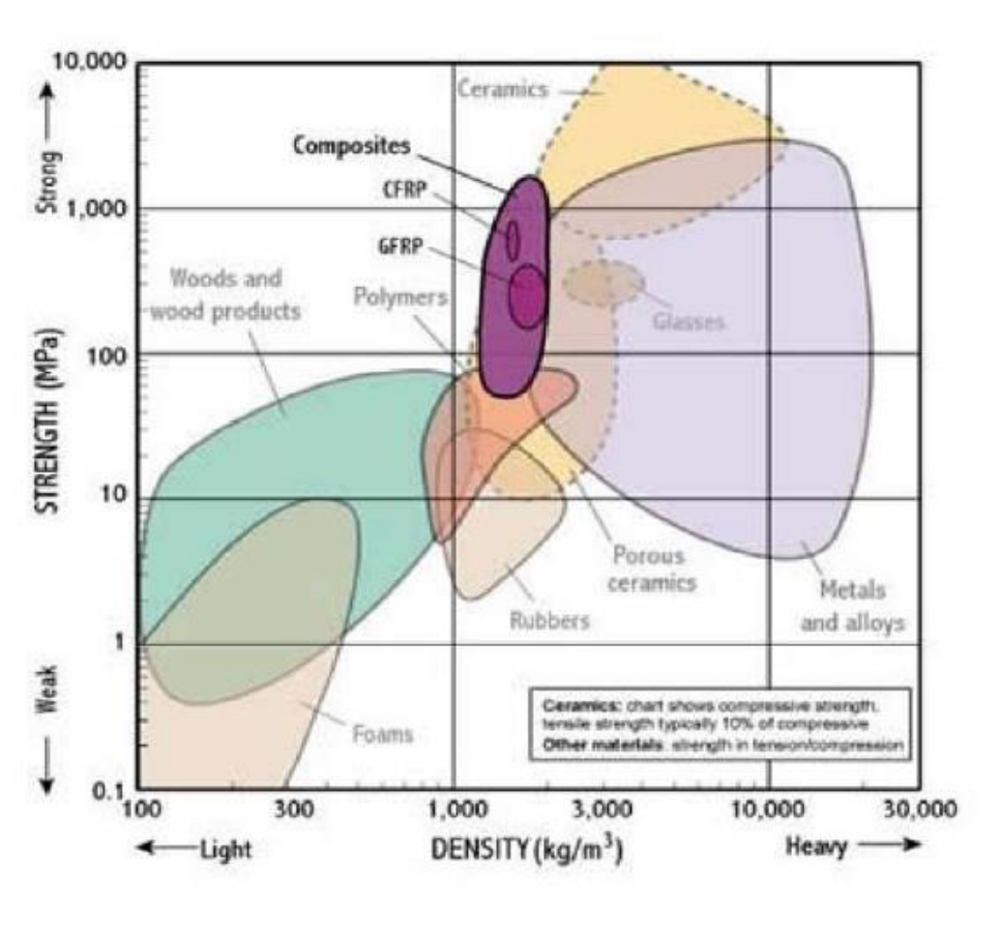
Their disadvantages are [Session 22 Slide 3]: costly programmes for the evaluation and certification of structures; costly investments in installations and equipment; high material cost; water entry in sandwich structures; low impact resistance; the need for additional protection against erosion; low thermal conductivity; the need for additional protection against lightning (the composite does not conduct the current away as an aluminium skin does); and low recyclability. The certification pyramid explains the first item: a new composite is qualified by tests on coupons, then on details, elements, sub-components and finally whole components before an aircraft can be certified.
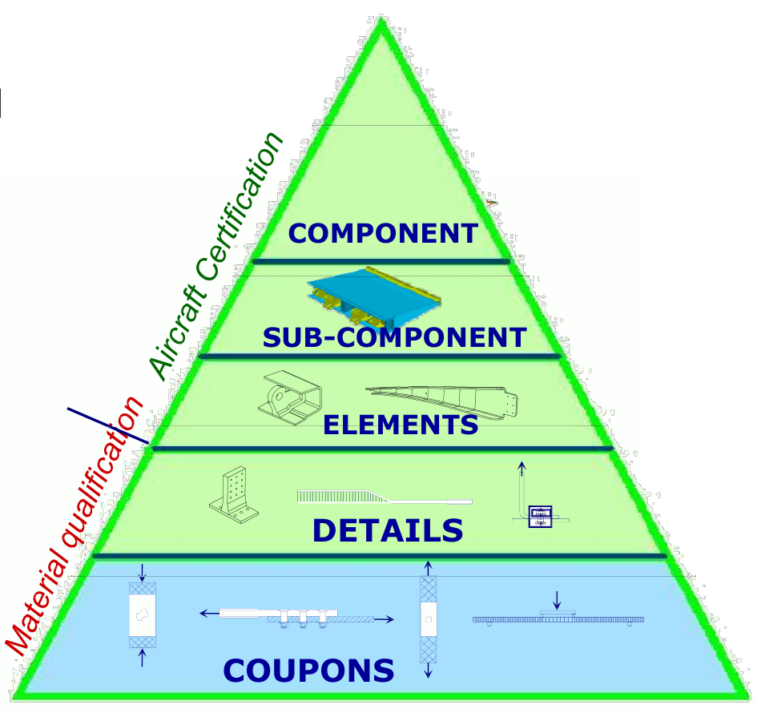
§ 18 Thermoset and thermoplastic matrices compared [Session 22 Slides 4-6]
The two families of polymer matrices differ in the way their chains are held together (Topic 9), and every processing difference follows from that [Session 22 Slide 4]:
- Thermosets have cross-linked chains: they are insoluble (they only swell), amorphous (characterised by $T_g$), have a low shelf life before curing, do not flow under stress even at high temperature, are brittle (low strain at failure) and sensitive to moisture.
- Thermoplastics (for composites, semicrystalline with a high $T_m$) are consolidated by heat and pressure with no chemical reaction, can potentially be reprocessed, have a long shelf life and allow fast part fabrication, but their melts are very viscous, so they need high pressures and shearing forces that can damage the reinforcement.
| Thermoset | Thermoplastic | |
|---|---|---|
| Main characteristics | Chemical change when cured; low strain to failure; low fracture energy; irreversible processing; very low viscosity possible; absorbs moisture; highly resistant to solvents | Non-reacting, no curing; high strain to failure; high fracture energy; reversible processing; very high viscosity; absorbs little moisture; limited resistance to organic solvents in some cases |
| Advantages | Relatively low processing temperature; good fibre wetting; formable into complex shapes; liquid-resin manufacturing feasible; resistant to creep | Short processing times; reusable scrap; post-formable and reprocessable; rapid processing; unlimited shelf life without refrigeration; high delamination resistance |
| Disadvantages | Long processing and cure (1 to 2 h); restricted storage life | Lower resistance to solvents; needs high temperature (300 to 400 °C) and pressure; can be prone to creep |
(Table of [Session 22 Slide 5].)
Whatever the family, the polymer matrix has the five functions already listed in Section 6: transfer the load into and out of the fibres, protect them, separate them so that one broken fibre does not break its neighbours, keep their orientation and give the shape of the part [Session 22 Slide 6]. The sketch of the slide shows the first and third functions at a fibre break: at the crack the broken fibre carries no stress, and the matrix passes its load to the neighbouring fibres and back into the broken fibre, by shear along its surface, within a short distance of the crack.

§ 19 Thermosetting matrices [Session 22 Slides 7-12]
The thermosetting matrices used in the aerospace industry are epoxy (with elastomeric or thermoplastic additives), bismaleimides (BMI), polyimides (PI, thermoplastic or thermosetting), polyesters and phenolics [Session 22 Slide 7].
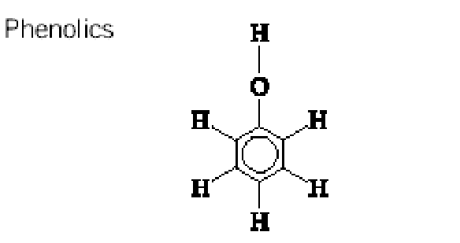
Epoxy resins are the most used in structural applications [Session 22 Slide 8]: good mechanical properties in general, service temperatures between 60 and 150 °C, low shrinkage and good adhesion to most fibres; they are usually cured at 120 °C or 180 °C. Polyimides are more expensive and less used than epoxies; they are designed for relatively high service temperatures, between 130 and 230 °C, but have a higher water absorption and a lower stiffness than epoxies.
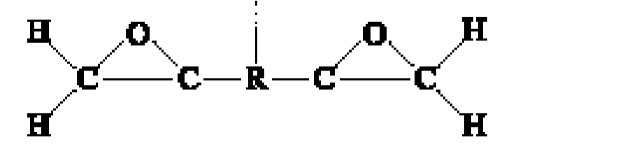
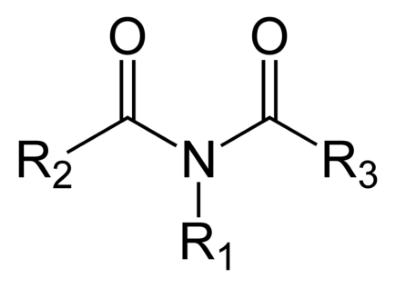
Bismaleimides have $T_g$ between 275 and 300 °C and good performance at high service temperatures (250 °C) [Session 22 Slide 9]. They can use conventional cure cycles, giving laminates with low porosity, but usually need a post-cure to reach optimum properties; they have good mechanical properties but suffer microcracking during prolonged exposure to high temperatures.
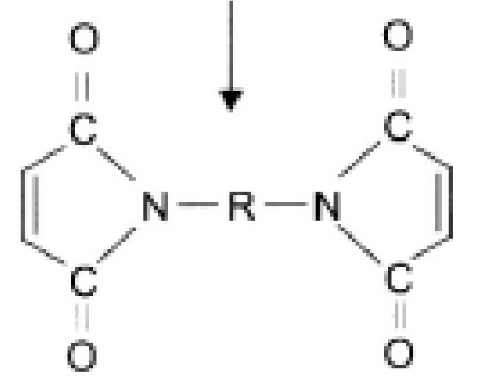
Details of selected thermosetting matrices [Session 22 Slide 10]:
| Matrix | Examples | Cure (°C / kPa) | Max. (wet) capability (°C) | Performance as matrix |
|---|---|---|---|---|
| Epoxy | Hexcel 920 | 120/700 | 80+ | Best properties all around |
| Epoxy | Hercules 3501; Fiberite 934; Narmco 5208 | 180/700 | 100+ | Excellent adhesion to fibres; easy to process, wide viscosity range, good wetting; excellent water and chemical resistance; fairly low toughness, composites sensitive to impact damage; sensitive to UV exposure |
| Toughened epoxy | Hercules 3502; Fiberite 977-2 | 180/700 | 100+ | All of the above, plus improved damage tolerance and increased moisture sensitivity |
| BMI | Hexcel F560 | 180/700 + post-cure 200 | 230 | Exceeds the temperature capability of epoxy; relatively easy to process; even less tough than epoxies; shrinks during cure; prone to microcracking with thermal cycling |
| Toughened BMI | Cytec 5250-4 | 80/700 | 180 | All of the above for BMI, plus more damage resistance; lower temperature capability than untoughened |
| Condensation polyimide | PMR-15 | 300/400 | 320 | Resistant to oxidation; properties similar to epoxy over an extended temperature range; low toughness and difficult to process |
Properties of the thermosetting resins [Session 22 Slide 11]:
| Property | Polyester | Phenolic | Epoxy | Bismaleimides | Polyimide |
|---|---|---|---|---|---|
| Density (g/cm³) | 1.1 to 1.5 | 1.3 | 1.1 to 1.4 | 1.2 to 1.3 | 1.2 to 1.9 |
| Elastic modulus (GPa) | 1.3 to 4.5 | 4.4 | 2.1 to 6.0 | 3.4 to 4.1 | 3.0 to 3.1 |
| Tensile strength (MPa) | 45 to 85 | 50 to 60 | 35 to 90 | 35 to 90 | 80 to 190 |
| Fracture toughness (MPa m$^{1/2}$) | 0.5 | 0.6 to 1.0 | |||
| Fracture energy (kJ/m²) | 0.02 | 0.3 to 0.39 | |||
| CTE ($10^{-6}$ K⁻¹) | 100 to 200 | 45 to 110 | 55 to 110 | 60 to 65 | 14 to 90 |
| $T_g$ (°C) | 120 to 190 | 275 to 300 | 300 to 350 | ||
| Water absorption (%) | 2 to 6 | 4 to 4.5 |
Comparing this table with the fibre tables of Section 16 shows the logic of the composite: the resins have moduli of a few GPa and strengths below 200 MPa, one to two orders of magnitude below the fibres, and CTEs about ten times higher than glass.
Additives modify the resin [Session 22 Slide 12]: solvents lower the viscosity before cure (handling, wet-out); plasticisers lower the modulus and raise the elongation to failure; inert fillers, including hollow spheres, change the density, the resin flow, the cost and the effective modulus; toughening agents precipitate from the reacting matrix during cure as fine particles that change the crack propagation in the cured matrix. Two toughening mechanisms are named: a random dispersion of a thermoplastic second phase in the initial formulation (polyethersulphone), and a random dispersion of a rubber second phase formed in situ during polymerisation (carboxyl- or amine-terminated poly(butadiene-co-acrylonitrile), CTBN rubbers).
§ 20 Thermoplastic matrices [Session 22 Slides 13-15]
There is a considerable effort to replace thermosetting by thermoplastic matrices [Session 22 Slide 13]. Their advantages are unlimited shelf life, storage at room temperature, better resistance to impact and moisture, toughness (strain at fracture 30 to 100 %), good FST behaviour (fire, smoke and toxicity), processing speed, reprocessability and recyclability. Their disadvantages are the high cost of the materials, the high processing costs (high temperature and pressure), the need for a surface treatment of the carbon fibres and special auxiliary materials.
Unlike thermosets, thermoplastics are not cross-linked, and they are classified as amorphous or semicrystalline [Session 22 Slide 14]:
- Amorphous (example PEI): a high concentration of molecular entanglements; heating disentangles them and turns the rigid solid into a viscous liquid; low resistance to aggressive fluids; a wide processing window.
- Semicrystalline (examples PEEK, PPS): a high degree of molecular order and alignment; may have anisotropic properties (oriented crystalline lamellae); very good resistance to aggressive fluids; the processing window can be critical, especially the cooling rate, which sets the crystallinity.
Thermoplastics processed by injection moulding are reinforced with carbon or glass fibre (PEEK, PA, PTFE). Selected thermoplastic matrices [Session 22 Slide 15]:
| Polymer | Example | Process $T$ (°C) | $T_g$ (°C) | Performance as matrix |
|---|---|---|---|---|
| PEEK (polyether ether ketone) | Victrex | 400 | 145 | Excellent mechanical properties, including toughness; for use up to 120 °C; highly resistant to damage; excellent fire resistance; the most used for high-performance composites |
| PPS (polyphenylene sulphide) | Ryton | 340 | 90 | Good strength, stiffness and temperature capability; some grades of low viscosity; resistant to most fluids but attacked by some solvents; good fire resistance; low impact resistance (comment shared by PPS, PSF and PES) |
| PSF (polysulphone) | Udel | 400 | 190 | as PPS |
| PES (polyethersulphone) | Victrex | 400 | 230 | as PPS |
| PI (polyimide) | Kapton | 390 | 320 | Selected for the highest-temperature applications; highly viscous; difficult to process (comment shared by PI and PEI) |
| PEI (polyetherimide) | Ultem | 370 | 215 | as PI |
The process temperatures, 340 to 400 °C, are the "high temperature and pressure" of the disadvantages: the polymer must be melted, not just cured.
§ 21 The interface region [Session 22 Slides 16-18]
The interface is the planar region that separates two components; the newer concept of interphase describes a region with a volume and gradients of properties between them [Session 22 Slide 16]. The final properties of a fibre-reinforced polymer depend on the interfacial adherence: the SEM fractographs show clean, smooth fibres pulled out of the matrix when the adherence is poor, and fibres still coated with matrix when it is good.

Most treatments assume a "perfect" bond: no debonding, cracking or sliding at the interface [Session 22 Slide 17]. In practice many important phenomena take place there, and the plastic deformation of the matrix near the interface can influence failure. Interfacial bonds form by adsorption and wetting, interdiffusion and chemical reaction, electrostatic attraction and mechanical keying; a bonding system between matrix and fibre is needed to achieve the ideal mechanical properties consistently.
The bond strength is controlled with coupling agents, toughness-reducing coatings, and coatings that act as barriers to interfacial reaction and diffusion [Session 22 Slide 18]. For glass fibres this is the sizing of Section 7, with the same composition and roles. The coupling agent works at the molecular level: on one side it bonds chemically to the glass (the M-O-Si links of the figure), on the other it diffuses into the polymer (the diffused interface), so the interface becomes a continuous chain of bonds instead of a weak physical contact.

§ 22 Mean elastic properties and micromechanics [Session 22 Slides 19-20]
A property of a composite is a mean property of its components, and the mean depends on the microstructural geometry [Session 22 Slide 19]. Three ideal geometries are analysed: (a) a fibre composite loaded parallel to continuous fibres; (b) a fibre composite loaded perpendicular to them; (c) a particle composite with a uniformly dispersed phase. The stress-strain lines of the slide give the result for E-glass/epoxy: the composite with 70 vol% fibres has a modulus of $52.8\times10^3$ MPa, between the fibre ($72.4\times10^3$ MPa) and the matrix ($6.9\times10^3$ MPa); Section 23 shows that this is the isostrain value, $0.70 \times 72.4 + 0.30 \times 6.9 = 52.75$ (in $10^3$ MPa).
Micromechanics models the fibres and the matrix separately [Session 22 Slide 20]. It can be approached in three ways: (1) the mechanics of materials, which predicts the behaviour of simplified models; (2) the theory of elasticity, which gives upper and lower bounds and exact analytical or numerical solutions; (3) finite elements, with 2D or 3D models of varying sophistication. Sections 23 to 26 use the first approach, with these assumptions: the fibres are homogeneous, linearly elastic, isotropic, regularly spaced, perfectly aligned and of uniform length; the matrix is homogeneous, linearly elastic and isotropic.
§ 23 Isostrain: modulus parallel to the fibres [Session 22 Slides 21-22]
Load a composite with continuous fibres along the fibres (direction 1). If the bond is good, fibre, matrix and composite stretch by the same amount, the isostrain condition [Session 22 Slide 21]:
Stress. The force on the composite is shared by the two phases, $F_C = F_f + F_m$, and each force is a stress times an area, $\sigma = F/A$:
Because the fibres are continuous, the three lengths are equal, $L_C = L_f = L_m$, so multiplying each area by the common length turns it into a volume, $V = A L$. Dividing by the volume of the composite, the area fractions become volume fractions, $A_f/A_C = V_f/V_C = v_f$ with $V_C = 1$ [Session 22 Slide 21]:
Modulus. Dividing the stress balance by the common strain, and using $\sigma_i = E_i\varepsilon_i$ for each linear elastic phase [Session 22 Slide 22]:
This is the rule of mixtures; written for direction 1,
The slide reaches the same result a second way, through the ratio of the stresses in the two phases. With $\varepsilon_{1C} = \varepsilon_{1f} = \sigma_{1f}/E_f$:
and since the strains are equal, $\sigma_{1m}/\sigma_{1f} = E_m/E_f$, which gives Eq. 1 again.
Slide 22 prints the last member of this chain as $\left[\frac{(1 - V_f)\sigma_{1m}}{\sigma_{1f}} + V_f\right]$, without the factor $E_f$. Dividing by $\sigma_{1f}/E_f$ multiplies by $E_f$, so the bracket must be multiplied by $E_f$; without it the expression is dimensionless and cannot be a modulus. The boxed results of the slide (the rule of mixtures and Eq. 1) are correct.
Consequence: load redistribution. Under isostrain the stress in each phase is proportional to its modulus, $\sigma_{1f}/\sigma_{1m} = E_f/E_m$. When the fibres are much stiffer than the matrix ($E_f \gg E_m$), the fibres work at much higher stresses than the matrix ($\sigma_{1f} \gg \sigma_{1m}$) and carry almost all the load. For typical fibre composites with $V_f$ = 50 to 60 %, the matrix has only a small effect on $E_1$ [Session 22 Slide 22]:
The fraction of the load carried by the fibres follows from the same relations: $F_f/F_C = \sigma_f v_f/\sigma_C = V_f E_f/E_{1C}$ (it is used in the problems of the sheet).
§ 24 Isostress: modulus perpendicular to the fibres [Session 22 Slides 23-25]
Load the same composite across the fibres (direction 2). Now the fibres and the matrix are in series, like layers stacked along the load: each layer carries the whole force on the same area, so the stress is the same in all of them, the isostress condition [Session 22 Slide 23]:
assuming that the cross-sectional area does not change when the stress is applied.
Strain. In the stacking direction, the thickness of each phase is its fraction of the total length, $L_m = A_m L_C$ and $L_f = A_f L_C$ as printed on the slide (here $A_m$ and $A_f$ stand for the fractions of the phases, which equal the volume fractions), and the elongations add, $\Delta L_C = \Delta L_m + \Delta L_f$. Dividing by $L_C$:
and, with the fractions replaced by volume fractions, the overall strain is the volume-weighted sum of the strains [Session 22 Slide 23]:
The transverse strains of fibre, matrix and composite are $\varepsilon_f = \sigma_2/E'_f$, $\varepsilon_m = \sigma_2/E_m$ and $\varepsilon_2 = \sigma_2/E_2$, where $E'_f$ is the transverse modulus of the fibre (equal to $E_f$ for an isotropic fibre such as glass).
Modulus. Substituting the strains, with the same $\sigma$ in all phases [Session 22 Slide 24]:
and dividing by $\sigma$:
Putting the right side over a common denominator gives the composite modulus:
When $E_f \gg E_m$, the term $V_f/E_f$ is negligible and $1/E_2 \approx V_m/E_m$ [Session 22 Slide 24]:
so for $V_f$ = 50 to 60 % the transverse modulus is only about twice that of the matrix: the compliant matrix controls the transverse response. This is why unidirectional plies are never used alone (Section 14).
Example: E-glass/epoxy [Session 22 Slide 25]. With $E_f = 72.4\times10^3$ MPa and $E_m = 6.9\times10^3$ MPa, the isostrain line runs straight from $E_m$ to $E_f$, while the isostress curve stays close to $E_m$ until $V_f$ is large and then rises steeply. At $v_f = 0.5$, for instance, Eq. 1 gives $0.5 \times 72.4 + 0.5 \times 6.9 = 39.7\times10^3$ MPa and Eq. 2 gives $1/(0.5/72.4 + 0.5/6.9) = 12.6\times10^3$ MPa: the same composite is three times stiffer along the fibres than across them. The two curves are the upper and lower bounds of the modulus of any arrangement of the two phases (Section 26).

§ 25 Strength of a unidirectional composite [Session 22 Slide 26]
Consider a composite of modulus $E_C$ and strength $\sigma_C$, with a matrix of modulus $E_m$, strength $\sigma_m$ and yield stress $\sigma_{y,m}$, and fibres of modulus $E_f$ and strength $\sigma_f$. For the same reasons as the modulus, the strength of a unidirectional composite follows the rule of mixtures [Session 22 Slide 26]:
The stress-strain diagram of the slide (labels in Spanish) explains the terms. The fibres are elastic up to their fracture; the matrix yields ("la matriz cede") at a small strain and goes on deforming. The composite follows the fibres until the fibres fracture ("fractura de fibras"), which happens first because the fibres are the more brittle phase; at that strain the matrix carries a stress of about its yield value, which is the second term of the equation. After the fibres break, only the matrix carries load, and the equation becomes [Session 22 Slide 26]:

The strength of the composite is the larger of the two lines. When $V_f$ is small, the broken fibres act as holes and the second line, the matrix alone, is the higher one: adding a little fibre then weakens the material. A minimum (critical) $V_f$ is therefore required; below it the strength of the material is reduced [Session 22 Slide 26]. The figure marks $V_{min}$, where the two lines cross, and $V_{crit}$, where the composite line reaches the strength of the unreinforced matrix $\sigma_{mu}$. Writing $\sigma'_m$ for the matrix stress at the fibre-fracture strain ($(\sigma_m)_{\varepsilon_f^*}$ in the figure), the two printed lines give (extension):
Since $\sigma_{fu}$ is much larger than the matrix stresses, both fractions are small (a few percent for polymer matrices), and real fibre composites ($V_f$ = 50 to 60 %) are far above them.
In the problems of the sheet the matrix term is computed with the tabulated matrix strength, $\sigma_C = \sigma_f V_f + \sigma_m(1 - V_f)$, because the data give only one matrix stress; the term is small next to the fibre term.
§ 26 The general rule of mixtures and particle composites [Session 22 Slides 27-28]
In its general form, the rule of mixtures says that the properties of a composite depend on the relative quantities and the properties of its constituents [Session 22 Slide 27]:
where $P_{CM}$ is the property of the composite, $f_i$ the volume fraction of component $i$ and $p_i$ its property. For the density it is exact, because masses and volumes add: $\rho_c = \sum_i f_i\rho_i$.
A composite with homogeneously distributed particles has isotropic properties. Its exact treatment is complex and depends on the nature of the dispersed phase and of the matrix; an approximation is [Session 22 Slide 27]:
with $l$ the lower-modulus phase and $h$ the higher-modulus phase. The modulus lies between two limits [Session 22 Slide 28]:
- upper bound, $n = 1$: $E_C = E_l v_l + E_h v_h$, the isostrain rule;
- lower bound, $n = -1$: $1/E_C = v_l/E_l + v_h/E_h$, that is $E_C = E_h E_l/(v_h E_l + v_l E_h)$, the isostress rule.
The example of the slide is a copper matrix reinforced with tungsten particles. The measured moduli fall between the two bounds. Reading the end points of the chart ($E_{Cu} \approx 115$ GPa, $E_W \approx 345$ GPa), at 60 vol% W the bounds are $0.4 \times 115 + 0.6 \times 345 = 253$ GPa and $1/(0.4/115 + 0.6/345) = 192$ GPa, and the data points at that concentration lie between about 225 and 255 GPa.
§ 27 Improvement of the mechanical properties [Session 22 Slide 29]
The last slide shows what reinforcement achieves [Session 22 Slide 29]:
- Toughness of ceramics. The fracture toughness $K_{IC}$ of unreinforced Al₂O₃, SiC and Si₃N₄ is about 3 to 5 MPa√m; the ceramic matrix composites SiC/Al₂O₃, SiC/SiC and SiC/Si₃N₄ reach about 8 to 25 MPa√m (values read from the bar chart). Section 39 explains the mechanisms (crack bridging and fibre pull-out).
- Specific strength of epoxy. Reinforcing epoxy with glass, Al₂O₃, carbon or Kevlar fibres multiplies its specific strength several times and takes it well above that of 1040 steel, 2048 aluminium and Ti-5Al-2.5Sn; Kevlar/epoxy is the highest of the chart (the specific strength is printed in mm, a stress divided by a weight density).

Part III — Composites III: Processing and Applications (Session 23, Slides 1–65)
§ 28 The laminating procedure for aircraft-grade parts [Session 23 Slides 1-3]
Slide 1 lists the contents: the processing of polymer matrix composites (PMCs), metal matrix composites (MMCs) and ceramic matrix composites (CMCs), and their applications.
Aircraft-grade composite components are made by a chain of six steps [Session 23 Slide 2]: prepreg production → prepreg transport and storage → cutting and kitting → lay-up or moulding (by hand or automated) → bagging (moulding) → curing (autoclave). The rest of the PMC part of the session follows this chain.
The first step, fibre impregnation, gives two material forms [Session 23 Slide 3]: prepregs (pre-impregnated fibres) and sheet moulding compound (SMC). The usual material form is a B-staged epoxy prepreg: the resin is partially cured, about 15 % of full cure for hand lay-up and about 25 % for automated lay-up, so it does not flow at room temperature but still cures fully later.
The slides of Session 23 print "prepeg" and "prep-peg" for prepreg and "modling" for moulding in the flow charts; this page uses the standard spellings.
§ 29 Prepregs and sheet moulding compound [Session 23 Slides 4-8]
Prepregs are the most common way composites are used in aeronautical technology [Session 23 Slide 4]. Resin-impregnated fibre forms (tape or fabric) are made by impregnating the fibres with a controlled amount of resin (thermoset or thermoplastic), by solvent, hot-melt or powder-impregnation technologies. Prepregs deliver a consistent fibre/resin combination and ensure a complete wet-out of the fibres, which is the reason for their use in structures: every ply has the same fibre fraction. Unidirectional tape (all fibres parallel) is the most common prepreg form; prepregs of woven fabric and other flat goods reinforce in two directions and are typically sold in full rolls.
Thermosetting prepregs are stored in the "B-stage", partially cured, until they are needed [Session 23 Slide 5]: they must be stored at −18 °C and have a limited shelf life, because the cure reaction continues slowly at room temperature. The prepreg tape is then assembled into laminated structures. The slide shows glass fibre/epoxy prepreg, epoxy prepreg tape and carbon fabric/epoxy prepreg.
How prepregs are made [Session 23 Slide 6]:
- continuous fibres are aligned and receive a surface treatment;
- the fibres are coated by dipping in a resin/solvent bath, and a series of rollers ensures the correct amount of resin;
- the tape is dried to evaporate the solvent and partially cured over heated cylinders (calender rolls);
- the tape is protected with a backing paper and stored.
Sheet moulding compound [Session 23 Slide 7]: (1) continuous fibres are chopped into short fibres; (2) the short fibres fall onto a layer of resin paste with random orientations; (3) a second layer of resin is deposited on top; (4) the sheet is compacted between rollers. The sheet is still viscous at this stage and can later be shaped into various products (by compression moulding, Section 31). With short, random fibres it is less stiff and strong than a prepreg, and it is not as widely used in aerospace.
The prepregs are cut, often by automated cutting machines, and laid into laminated structures [Session 23 Slide 8]. The photograph shows a single-ply lay-up of boron-epoxy tape for the horizontal stabiliser of the F-14 fighter.
§ 30 Moulding methods: overview and manual lay-up [Session 23 Slides 9-10]
The lay-up and moulding step can be done by four groups of methods [Session 23 Slide 9]:
| Group | Methods |
|---|---|
| Manual (contact) lay-up | hand lay-up; spray lay-up |
| Moulding methods | vacuum-bag moulding; pressure-bag moulding; compression moulding; resin transfer moulding (RTM); resin film infusion (RFI) |
| Automatic processes | filament winding; automatic tape laying (ATL); automatic fibre placement (AFP) |
| Pultrusion |
Manual (contact) lay-up is used for laminated products or short fibres [Session 23 Slide 10]:
- Hand lay-up: resins and reinforcements (prepregs) are placed in the proper order and brushed or rolled into the mould.
- Spray lay-up: a mixture of fibres, resin and curing agent is sprayed into the mould; it cannot use continuous fibres (the fibres are short and randomly aligned).
Curing is often required after moulding (thermosetting polymers). These are open-mould methods: cheap, but the quality depends on the operator.
§ 31 Compression, pressure-bag and vacuum-bag moulding [Session 23 Slides 11-12]
Compression moulding [Session 23 Slide 11] is similar to the compression moulding of polymers (Topic 9): the material is placed between two moulds and pressure is applied. The material is an SMC or another fibre-impregnated compound (for example a bulk-forming compound, a viscous mixture of polymer, fibres and additives), and the moulds may be at room temperature or heated. The sketches show a profile formed step by step over a mould core.
Pressure-bag moulding [Session 23 Slide 11]: a flexible bag is placed over the mixture of resin and reinforcing fibre and pressurised (345 kPa, 50 psi in the figure), so that it presses the laminate against the mould.
Vacuum-bag moulding [Session 23 Slide 12]: the prepregs are laid in the mould and covered with a bag or flexible membrane; the pressure is obtained by removing the air (vacuum), and the vacuum is kept until the cure is complete. The atmosphere then presses the bag onto the laminate with up to 1 atm, consolidating the plies and drawing out air and volatiles. The bag is a stack of auxiliary layers, from the mould up: release agent, the composite laminate, peel ply, perforated release film, breather, and the vacuum bag sealed with tape and connected to the vacuum hose.
§ 32 Resin transfer moulding and resin film infusion [Session 23 Slides 13-16]
Resin transfer moulding (RTM), or resin injection moulding (RIM) [Session 23 Slides 13-14]: a preform or a dry fibre reinforcement (dry fabric) is placed in a closed mould; resin is forced into the mould cavity (the mould is often under vacuum) and the injection pressure ensures the impregnation of the fibres; then the part is cured. RTM uses dry (non-impregnated) fabric or discontinuous reinforcement. The most used resins are epoxy and polyester, and the process can also be used with thermoplastic matrices. The slides show the injection equipment (resin and catalyst containers, pump, mixing head, heated upper and lower mould) and a mould section with the injection points and the vent.

Resin film infusion (RFI) [Session 23 Slide 15]: a film of resin is placed in the mould together with the dry fibre; heat and pressure make the resin melt and flow through the dry fibre, impregnating it thoroughly. The process can be done in an autoclave or simply with heat and vacuum, in closed moulds or in open moulds with a vacuum bag. Because the resin only has to travel through the thickness of the stack, not along the whole part as in RTM, large parts can be infused (extension).
Slide 16 repeats the overview of the moulding methods of Slide 9.
§ 33 Filament winding [Session 23 Slides 17-18]
In filament winding [Session 23 Slide 17]: (1) the reinforcement (filament, tape or roving) is impregnated by passing through a polymer bath; (2) it is wrapped around a form (a rotating mandrel) by a carriage that moves back and forth; (3) resin and fibres are combined at the time of curing. It forms hollow parts of various cross-sections, usually round; fibres, rovings or narrow prepregs can be used, and it was the first automated process for fibre composites. The winding angle is set by the ratio between the carriage speed and the mandrel speed, and gives three patterns: circumferential (hoop), helical and polar winding.
The machines are CNC-controlled, with a creel of fibre spools, a carriage and a mandrel [Session 23 Slide 18]. The example is fibreglass wound over aluminium liners for the slide-raft inflation vessels of the Boeing 767: filament winding is the natural process for pressure vessels (Section 10).
§ 34 Automatic tape laying and automatic fibre placement [Session 23 Slides 19-22]
Automatic tape laying (ATL) [Session 23 Slides 19-20]: numerically controlled machines lay unidirectional tapes, controlling accurately both the orientation and the position, on flat or slightly curved surfaces. The tape is usually a unidirectional carbon/epoxy prepreg with backing paper, 75, 150 or 300 mm wide. The head carries the roll of tape, makes the cuts, separates the backing paper and presses the tape onto the mould. Curvatures or changes of slope of the mould can change the direction of the tape. The typical application is a flat multilayer laminate with plies at different angles, which is then cut, stacked and hot-formed into structural parts such as spars and ribs. The machine of Slide 20 is a 10-axis CNC system that lays 75 and 150 mm tapes on contours of up to ±30° at up to 0.5 m/s.
Automatic fibre placement (AFP) [Session 23 Slides 21-22] automates lamination by combining the advantages of filament winding and tape laying and solving the limitations of both. It can lay up concave and convex surfaces, open or closed; the material is deposited without tension on the tool and can be cut and re-fed automatically. Instead of one wide tape, the head controls a large number of narrow tows or tapes (3 to 6 mm), each paid out, clamped and cut individually and pressed by a compaction roller, so the band can follow curved paths and change width. The deposition rate is lower than that of ATL. Slide 22 shows fibre-placement machines on mandrels and fuselage barrels, and a seven-axis machine with two rotating mandrels.
§ 35 Pultrusion [Session 23 Slide 23]
In pultrusion [Session 23 Slide 23]: (1) continuous fibre rovings are impregnated with resin; (2) a preforming die sets the shape of the cross-section and the fibre/matrix ratio; (3) a heated curing die accelerates the cure of the (thermosetting) matrix, and pullers draw the cured profile out continuously. It is used for shapes of constant cross-section (rods, tubes, beams), with glass, carbon or aramid fibres in polyester, vinyl ester or epoxy matrices. It is the composite counterpart of extrusion, but the material is pulled, not pushed, through the die.

§ 36 Curing in an autoclave [Session 23 Slides 24-26]
Slide 24 repeats the laminating chain of Slide 2, now at its last step. High pressures are sometimes needed to cure complex parts properly, so PMCs with thermosetting matrices are often cured in an autoclave: a very large, internally heated pressure vessel with internal connections for vacuum hoses and for sensors such as thermocouples [Session 23 Slide 25]. The bagged lay-up sits on its tool; the vacuum line evacuates the bag while the autoclave pressure acts on its outside, so the laminate is compacted by the vacuum and the gas pressure together.
A typical cycle has two steps [Session 23 Slide 26]: first, the viscosity of the resin is reduced, voids and air bubbles are eliminated and the pressure is applied; second, the curing proper, with the temperature raised to $T_c$ (usually 120 °C or 180 °C for thermosetting matrices). The best results need a pressure above 1 atm. The cycle of the chart heats at 3 °C/min to 135 °C and holds 1 h (the resin flows and consolidates), heats again to 180 °C and holds 2 h (cure), and cools at 1 °C/min (slow cooling limits the thermal stresses).
§ 37 Integration of structures [Session 23 Slides 27-29]
The processes above produce relatively simple parts, which must be integrated to reduce the cost of the later assembly [Session 23 Slide 27]:
- Co-curing: several simple uncured parts are assembled with tools and vacuum, and the assembly is cured in the autoclave, where the resin polymerises and joins them in one step.
- Bonding: several simple cured parts are positioned and joined with adhesives that cure at high temperature and pressure.
- Co-bonding: simple parts, some pre-cured and others uncured, are joined with adhesive; the polymerisation of the resin and of the adhesive happen at the same time.
For complex structures optimised for weight, a higher level of integration needs more complex, more expensive tooling; the cost can be optimised with simpler structures whose integration uses more flexible tooling. The example of Slide 28 is a skin with stringers: the skin is laid by ATL, vacuum-bagged and cured; the stringers are laid flat by ATL, cut by an automatic NC machine, hot-formed and located on the skin; the assembly is vacuum-bagged and co-bonded in a cure cycle, then trimmed and inspected. Slide 29 shows a co-bonded pre-cured skin with wet (uncured) T-stringers on a turning rack.
§ 38 Metal matrix composites and their processing [Session 23 Slides 30-37]
Metal matrix composites [Session 23 Slide 30] use light metals (Al, Mg, Ti) as matrices to form high-performance composites. The reinforcements are ceramics (SiC, Al₂O₃ and Borsic, boron fibres coated with silicon carbide), and carbon fibres can be used with Al or Mg matrices.
| Advantages | Disadvantages |
|---|---|
| Higher specific strength and stiffness | Costly, complex and limited fabrication techniques |
| Higher service temperature than PMCs | The metals often react chemically with the fibres and weaken them, during manufacture or in service at high temperature |
| Greater wear resistance | |
| Properties tailored to a particular application |
The processing routes are grouped by the state of the matrix during processing [Session 23 Slide 31]:
Solid-state processing [Session 23 Slide 32]:
- Diffusion bonding: a fibre mat is sandwiched between two metal foils to form a ply (consolidated by heat, not essential); the plies are cut and stacked, encapsulated in vacuum and hot-pressed, and the metal bonds by diffusion. It is expensive and limited to simple shapes.
- Powder metallurgy: the matrix powder and the reinforcement are mixed and processed by the traditional powder-metallurgy route (compaction in a die and sintering); it is suitable for discontinuous fibres, whiskers or particles.
Liquid-phase processing [Session 23 Slides 33-35]:
- Melt stirring: the reinforcement is mixed into the molten metal by a stirrer and the mixture is cast. It is a limited process: the mixing is poor even with stirring, because of the density differences (particles float or sink).
- Liquid infiltration: liquid metal is forced into a porous reinforcement preform by applying pressure, either mechanically (squeeze casting) or by a gas (gas pressure infiltration).
Squeeze casting [Session 23 Slide 34]: a porous preform is inserted in the die; the correct amount of molten metal is added; pressure is applied mechanically and released when solidification is complete; the part is removed. It is suitable for small near-net-shape products.
Gas pressure infiltration [Session 23 Slide 35]: the preform is put in a closed die; the chamber with the molten metal is evacuated; gas is forced into the chamber under pressure, which pushes the molten metal into the preform; the pressure is kept until solidification is complete, and the part is removed. It is suitable for larger components. (The infiltration of a porous tungsten body with silver in Problem T10-12 is an example of this route.)
Two-phase (liquid-solid) processing [Session 23 Slides 36-37]:
- Rheocasting or compocasting: a modification of melt stirring for better mixing; the reinforcement is mixed with the metal while it is in the mushy two-phase (liquid-solid) region, where the semi-solid alloy is viscous enough to keep the particles from settling; the composite billet is then formed, for example by hot extrusion. It is limited to casting alloys with a wide solidification range.
- Spray co-deposition: the melt is atomised, the reinforcement is injected into the spray of droplets, and both are co-deposited on a substrate.

§ 39 Ceramic matrix composites and their processing [Session 23 Slides 38-45]
Ceramic matrix composites [Session 23 Slide 38] have matrices of silica-based glass, silicon carbide, silicon nitride, alumina or carbon, reinforced with ceramic fibres (SiC, Al₂O₃, Borsic) or carbon fibres. Their purpose is to increase the toughness: the fracture energy rises through energy-absorbing mechanisms such as crack bridging (intact fibres span the crack and hold its faces together) and fibre pull-out (fibres are pulled out of the matrix against friction instead of breaking in the crack plane). The SEM of the fracture surface of a SiC fibre/SiC matrix composite shows the pulled-out fibres. The advantages are high fracture toughness (crack resistance), low density, high specific strength and modulus, oxidation stability at high temperature, greater wear resistance and use in extreme conditions; the disadvantage is again the costly, complex and limited fabrication.
The families of CMCs [Session 23 Slides 39-40]:
| Matrix | Key point | Reinforcements | Applications shown |
|---|---|---|---|
| Silicon carbide | High thermo-structural applications with long exposure times | C fibres, SiC fibres | Rocket nozzle, aero-engine vane |
| Carbon | Frictional applications and short high-temperature applications | C fibres | Brake discs, gas ventilators |
| Oxide | Applications where superior thermal stability is needed | Al₂O₃ fibres in an Al₂O₃ matrix | Mixer nozzle, acoustic nozzle |
| ZrB₂ or HfB₂ | Applications where ultra-high temperature is needed (above 2000 °C) | SiC particles, SiC fibres | Re-entry nose, nozzle |
The figures print "Break discs" (brake discs), "Mixer noozle" and "Acoustic noozle" (nozzle), "Rentry nose" (re-entry nose) and "A₂O₃" for Al₂O₃.
High-temperature examples [Session 23 Slide 41]: carbon fibre-reinforced silicon carbide (C/SiC) tubes; C/SiC nozzle extensions for the Vulcain engine (subscale extensions of 340 mm and 152 mm diameter) and a subscale nozzle in a 40 bar hot-firing test; and an F-16 F100 engine exhaust nozzle with five A500 CMC divergent seals. The chart of temperature capability against thermal conductivity places the materials: Ni-based superalloys below about 1100 °C, SiC/SiC and C/SiC CMCs around 1200 to 1700 °C, and C/C composites and ultra-high-temperature ceramics (UHTC borides and carbides) near 2000 °C and above (values read from the chart).
Slide 41 prints "Silicon Carbide reinforced with silicon carbide (C/SiC)"; the abbreviation of that material is SiC/SiC, as in the chart of the same slide.
CMCs are processed by four routes [Session 23 Slide 42]: conventional mixing and processing, infiltration of a preform, slurry processing and liquid-state processing.
- Conventional mixing and processing [Session 23 Slide 43]: powders of the matrix, the particulate or whisker reinforcement and a binder are mixed, pressed and fired. Its problems are non-uniform mixing, a low volume fraction of reinforcement and damage to the whiskers during mixing and pressing.
- Liquid-state processing [Session 23 Slide 43]: the molten matrix is infiltrated between the reinforcement under pressure, as for MMCs, but with limited success in CMCs: the high melting temperature of ceramics causes reactions between matrix and reinforcement, and their high viscosity gives a low infiltration rate.
- Infiltration of a preform (sol-gel) [Session 23 Slide 44]: a sol is poured over a ceramic fibre preform and infiltrates it; gelation and drying follow, and then pyrolysis (800 to 1300 °C in the figure) converts the gel into ceramic. Because the gel shrinks, the infiltration, drying and pyrolysis are repeated (4 to 10 times in the figure) until the required density is reached.
- Slurry processing [Session 23 Slide 45]: fibres pass through a tank of matrix slurry; the impregnated tapes are stacked, the binder is burnt out (500 °C) and the stack is hot-pressed in a graphite die (800 to 925 °C) to give the composite.
§ 40 Applications: requirements and civil aircraft [Session 23 Slides 46-54]
Composites are used in the aerospace industry, military applications, the naval industry, transportation, construction, the chemical industry, sports equipment, medical materials and consumer goods [Session 23 Slide 46]. For aircraft the material requirements are high specific strength, low coefficient of thermal expansion, resistance to extreme temperature changes (−200 to 200 °C), dimensional stability (critical for some applications) and low weight (critical for special applications). The new challenges are toughened thermosetting polymers, high-performance thermoplastics, innovative low-cost manufacturing processes and recyclability.
History in civil aircraft [Session 23 Slides 47-48]:
- mid-1960s: glass-reinforced composites (honeycomb sandwich constructions) in secondary structures: wing-to-body fairings, fixed-wing and empennage cover panels and secondary control surfaces.
- early 1980s: carbon/epoxy, aramid/epoxy and hybrid (aramid-carbon/epoxy, glass-carbon/epoxy) composites in secondary structures (belly fairings, cover panels, engine cowlings) and in primary flight controls (ailerons, elevators, rudders, spoilers) of the Boeing 757, 767 and 737-300 and the Airbus A310 and A320.
- late 1980s: composites in primary structure, the empennage of the Airbus A320, with carbon/epoxy skins of first-generation materials.
- Then fibres of higher strength and modulus (Hercules IM7, Toray T800H) and toughened matrices brought composites to the empennage of the Boeing 777.
| Aircraft | Component | Material | Number of parts | Entered service |
|---|---|---|---|---|
| L-1011 | Underwing fairing | Aramid/epoxy | 18 | 1973 |
| L-1011 | Aileron | Carbon/epoxy | 8 | 1982 |
| DC-10 | Upper aft rudder | Carbon/epoxy | 15 | 1976 |
| DC-10 | Aft pylon skin | Boron/aluminium | 3 | 1975 |
| DC-10 | Vertical stabiliser | Carbon/epoxy | 1 | 1987 |
| 727 | Elevator | Carbon/epoxy | 10 | 1980 |
| 737 | Spoiler | Carbon/epoxy | 108 | 1973 |
| 737 | Horizontal stabiliser | Carbon/epoxy | 10 | 1984 |
(Table of [Session 23 Slide 47].) The chart of the share of composite components shows the jump from a few percent (MD-80, 757, 767) to about 10 % (A320, A340, 777), about 23 % (A380) and about 50 % (787).
Airbus [Session 23 Slides 48-51]. The structure of the A380-800 (engines and landing gear excluded) is 61 % aluminium alloys, 22 % organic materials (CFRP, GFRP, QFRP), 10 % titanium and steel alloys, 3 % GLARE, 2 % surface protections and 2 % miscellaneous; the stacked chart shows the share of composites and GLARE growing from the A300 (1972) to the A380 (2006). About 15 % of the structural weight of the A340-600 is carbon fibre composite (wing J-nose, engine cowling, vertical and horizontal tail planes, keel beam, belly fairing, rear pressure bulkhead). The A350 XWB (A350-900) has carbon-fibre fuselage skin panels with aluminium frames, and its material breakdown is 52 % composite, 20 % aluminium and aluminium-lithium, 14 % titanium, 7 % steel and 7 % miscellaneous. The A380 and the A400M military transport include carbon fibre in the fuselage or in major parts of the wing (A380: centre wing box, floor beams for the upper deck, J-nose, outer flaps, section 19, rear pressure bulkhead, tail planes).

Boeing [Session 23 Slides 52-53]. The 757-200 and the 767 use composites in control surfaces, fairings and panels (graphite, Kevlar, Kevlar-graphite and fibreglass); the 777 uses graphite and toughened graphite in the empennage, floor beams and control surfaces; the 787 has a composite wing and fuselage (one-piece barrel sections), and composites make up more than 50 % of its structural materials.
Typical aircraft composite forms and the processes that make them [Session 23 Slide 54]:
| Process | Type of structure | Typical application |
|---|---|---|
| Laminates | Thick monolithic sheets | Wing skins |
| Integrally stiffened sheets | Tail skins | |
| Sandwich panels | Control surfaces, floor sections | |
| Shells | Fuselage sections | |
| Beams | Spars, ribs | |
| Complex forms | Aerofoils | |
| Filament wound | Closed shells | Pressure vessels |
| Open shells | Radomes, rocket motors | |
| Tubes | Drive shafts | |
| Secondary formed tubes | Helicopter blades | |
| Braided | Tubes | Drive shafts |
| Complex tubes | Curved pipes, truss joints, ducts | |
| Closed shells | Pressure vessels | |
| Secondary formed | Fuselage frames, aircraft propellers, helicopter blades | |
| Tow placed | As laminates | As laminates |
| Complex wraps | Grips, shafts, ducts | |
| Pultrusion | Beams | Floor beams, stringers, spars, ribs, longerons |
§ 41 Military aircraft and helicopters [Session 23 Slides 55-59]
Technology programmes of the 1970s for the F-15, Alphajet, Tornado and Mirage generated the composite knowledge (moisture pick-up, crack sensitivity) [Session 23 Slide 55]. Typical composite components of military aircraft are fins, undercarriage covers and fuselage components (Tornado, X-31, Eurofighter). The Eurofighter has a 70 % (surface area) share of composite materials, mostly CFRP. The variety of materials and technologies in military aircraft is much smaller than in civil aircraft, and prepreg technology still dominates [Session 23 Slide 56]. The chart of the fibre-composite share of the structural mass shows the US fighters (F-14 to F-22, about 25 %) ahead of the European ones in the 1980s, and Europe catching up with the EAP, Gripen, EF and Rafale. The USAF B-2 bomber is an almost all-composite structure [Session 23 Slide 57].
Helicopters [Session 23 Slides 58-59] use composites in:
- the rotor blades (glass-fibre-reinforced composites), whose service life increased by a factor of 200, thanks to their superior fatigue properties and the potential for multifunctional design;
- the passenger cell;
- the rotor blade head, with additional functionality (tuned anisotropy) and fewer parts (integrated hinges);
- the underfloor, for its energy absorption capability.
The rotor blades and the blade head use composites not only for their high specific stiffness and strength but for additional functions: tuned anisotropy and integrated hinges improve performance and cost, and the reduction and integration of parts cut assembly and maintenance costs and improve reliability [Session 23 Slide 59]. The comparison of a conventional rotor head (Sikorsky S-58) with the bearingless composite rotor of Eurocopter (a flexbeam with an integrated control tube) shows the reduction. The underfloor must absorb energy in a crash, and composites are used for their high mass-specific energy absorption. The EC135 and the Tiger show the composite parts of two helicopters: GFRP sandwich, carbon-aramid sandwich secondary structure and carbon-fibre primary structure.
§ 42 Space, naval, sports, automotive and MMC applications [Session 23 Slides 60-65]
Satellites [Session 23 Slide 60] (XMM-Newton: structure, antennas, drop-down arms): the main structural elements are made of ultra-high-modulus carbon-fibre composites, chosen for their low thermal expansion (dimensional stability in orbit); the telescope tube and mirror support platform are of carbon fibre with metals. The slide repeats the chart of carbon-fibre types of Section 8.
Space Shuttle thermal protection [Session 23 Slide 61]: the Orbiter 102 is covered by reinforced carbon-carbon (RCC) on the nose and wing leading edges, high- and low-temperature reusable surface insulation (HRSI, LRSI) and coated Nomex felt reusable surface insulation (FRSI), with metal or glass elsewhere:
| Element | Area, m² (sq ft) | Weight, kg (lb) |
|---|---|---|
| FRSI | 332.7 (3581) | 532.1 (1173) |
| LRSI | 254.6 (2741) | 1014.2 (2236) |
| HRSI | 479.7 (5164) | 4412.6 (9728) |
| RCC | 38.0 (409) | 1697.3 (3742) |
| Miscellaneous | 918.5 (2025) | |
| Total | 1105.0 (11 895) | 8574.7 (18 904) |
(The weights include bulk insulation, thermal barriers and closeouts.) RCC, a carbon-carbon composite, covers only 3.4 % of the area but carries 20 % of the weight: it is used only where the temperature is highest.
Naval industry [Session 23 Slide 62]: tankers use glass/polyester in the superstructure and the mast and glass/polyester or carbon/epoxy in the hull; race boats, sailing boats and yachts are mass applications of composites (hull, mast, sail) in glass/polyester or carbon/epoxy, and laminates are an alternative candidate.
Sports [Session 23 Slide 63]: the cross-section of a composite sailboard is an example of advanced materials construction: a polystyrene foam core within honeycomb, glass and Kevlar or carbon reinforcements, laminated composite stringers and a polycarbonate skin with a polyurethane coating.
Automotive industry [Session 23 Slide 64]: the General Motors Ultralite, made by Scaled Composites, has its whole body structure in composite (carbon/epoxy-PVC sandwich), weighs 190 kg and cost 13 000 USD.
Metal matrix composites [Session 23 Slide 65]:
| Fibre | Matrix | Applications |
|---|---|---|
| Graphite | Aluminium, magnesium, lead, copper | Satellite, missile and helicopter structures; space and satellite structures; storage-battery plates; electrical contacts and bearings |
| Boron | Aluminium, magnesium, titanium | Compressor blades and structural supports; antenna structures; jet-engine fan blades |
| Alumina | Aluminium, lead, magnesium | Superconductor restraints in fission power reactors; storage-battery plates; helicopter transmission structures |
| Silicon carbide | Aluminium, titanium; cobalt-base superalloy | High-temperature structures; high-temperature engine components |
| Molybdenum, tungsten | Superalloy | High-temperature engine components |
Links printed in the slides
These are references printed on the slides, not content of the portal:
- Session 23, Slide 13 (resin transfer moulding): http://www.plastech.co.uk/Mtrtm.html
- Session 23, Slide 32 (MMC solid-state processing, video): http://www.youtube.com/watch?v=5EhMYMr834o
- Session 23, Slide 41 (F-16 CMC nozzle seals): http://www.wpafb.af.mil/news/story.asp?id=123105651
- Session 23, Slide 48 (787 wing de-icing): http://www.compositesworld.com/articles/787-integrates-new-composite-wing-deicing-system
- Session 21, Slide 22 (carbon fibre classification): www.carbonfiber.gr.jp
§ 43 Collected formulas of the topic
Everything below is taken from the sections above; it is a quick reference, not new content.
| Quantity | Formula | Where |
|---|---|---|
| Rule of mixtures | $P_{CM} = \sum_i f_i p_i$, $\sum_i f_i = 1$ | Section 26 |
| Density of a composite | $\rho_c = V_f\rho_f + V_m\rho_m$ | Section 26 |
| Weight fraction of fibre | $w_f = V_f\rho_f/\rho_c$ | Problems T10-01, T10-07 |
| Isostrain stress | $\sigma_{1C} = (1 - V_f)\sigma_{1m} + V_f\sigma_{1f}$ | Section 23 |
| Longitudinal modulus (isostrain, Eq. 1) | $E_{1C} = (1 - V_f)E_m + V_f E_f \approx V_f E_f$ | Section 23 |
| Fraction of the load on the fibres | $F_f/F_C = V_f E_f/E_{1C}$ | Section 23 |
| Isostress strain | $\varepsilon_{2C} = V_f\varepsilon_{2f} + (1 - V_f)\varepsilon_{2m}$ | Section 24 |
| Transverse modulus (isostress, Eq. 2) | $1/E_{2C} = V_f/E'_f + V_m/E_m$, $E_C = E_f E_m/(v_f E_m + v_m E_f)$, $E_2 \approx E_m/V_m$ | Section 24 |
| Strength of a UD composite | $\sigma_C = \sigma_f V_f + \sigma_{y,m}(1 - V_f)$; after fibre fracture $\sigma_C = \sigma_m(1 - V_f)$ | Section 25 |
| Particle composites | $E_C^{\,n} = v_l E_l^{\,n} + v_h E_h^{\,n}$, $n = 1$ upper bound, $n = -1$ lower bound | Section 26 |
| Specific property | property / density | Section 16 |